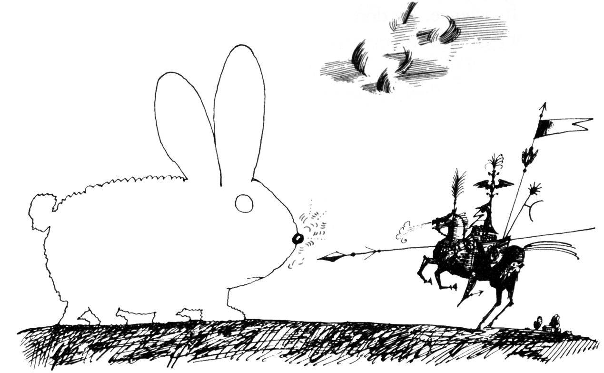

本图来源于《纽约客》1964年1月18日。
Saul Steinberg，Untitled drawing，ink on paper.
Originally published in The New Yorker，January 18，1964.
©The Saul Steinberg Foundation/Artists Rights Society（ARS），New York
许多年前，我们国家在东南亚发动的那场灾难性战争正处在高峰期。一天，我正在观看电视新闻。一位主持人（独一无二的沃尔特·克朗凯特，Walter Crokite）报道了一起事件，其中美国飞机在南越的一个村庄上抛下了凝固汽油弹，据信这是一个越共据点。当时大约10岁的儿子哈尔好奇地问道：“嘿，爸爸，什么是凝固汽油弹？”
“哦，”我随口答道，“按我的理解，它应该是一种能够让人燃烧的化学制品；它应该很有黏性，一旦粘到皮肤上，就无法取下来。”我继续观看新闻。
几分钟后，我无意中看了哈尔一眼，发现他已经是泪流满面。我深深地被他的痛苦和伤心打动了，当我意识到问题出在我身上时，我感到非常沮丧。难道我已变得如此残忍而毫不掩饰地回答儿子的问题，就像回答他垒球是怎样做成的，或者树叶有什么功能一样吗？难道我对人类的野蛮行为已经习以为常，对它们的存在已经无动于衷了吗？
从某种意义上说，这并不奇怪。我们这一代人已经经历了一个无法形容的恐怖时代：欧洲的大屠杀，广岛和长崎投下的原子弹，朝鲜战争以及东南亚和中东战争等等。在随后的几年里，我们也见证了中美洲无休止的内战；在柬埔寨屠杀了100多万平民；波斯尼亚的“种族清洗”；卢旺达、苏丹和阿尔及利亚的血洗；9月11日在我们自己的土地上发生的自杀式袭击，然后是接踵而至的美国在阿富汗和伊拉克的报复。尽管这些事件令人恐惧，但大规模杀戮当然不是我们这个时代所特有的。一位朋友曾经给我看过一本小书，这本书不过10或15页，据称是世界的袖珍历史，按时间顺序对历史记录中的重要事件进行了列表。你能猜出它的呈现方式吗？当然，一场接一场的战争，偶尔会被一些非暴力事件中断，例如耶稣的诞生和印刷机的发明。如果人类简史中最重要的事件是人们互相集体杀戮，我们会是一个什么样的物种呢？
而且，我们美国人表现出来的是对暴力的冷酷接受，即便有时似乎是完全荒谬和无理的。当美国战机轰炸利比亚以报复该国恐怖主义行为高涨时，尽管只有31％的人认为这次袭击能够有效遏制未来的恐怖主义，但仍有71％的公民赞同这一军事行动。1对此，我们只能断定，大量的美国民众已经将纯粹复仇的行动视为美国对外政策可以接受的一部分。可以肯定的是，大多数国家的大多数公民支持其政府发起的战争。但美国人领导的地球上最发达国家却容忍这样一个惊人的事实：在这个国家每天发生大规模枪击事件（可定义为至少4名受害者），每年有超过10万人死于枪支暴力，包括谋杀、袭击、自杀、事故和警察干预导致的死亡。2
我将攻击定义为旨在造成伤害或造成身体或心理痛苦的故意行为。攻击行为可能是身体上的，也可能是口头上的。无论是否成功实现目标，它仍然是攻击。因此，如果某个正在生气的朋友把啤酒瓶扔向你的头部，但你躲开了，那么瓶子就会错过它的目标，但它仍然是一种攻击行为。重要的是你朋友的意图。但是如果一个醉酒的司机，在你试图过马路时无意中撞向了你，那么这并不是一种攻击行为，即使你遭受的伤害远远大于躲过啤酒瓶所造成的伤害。
根据这个定义，我们人类已经证明自己是一个特别具有攻击性的物种。没有其他动物如此一贯地大肆打击、折磨和杀死他们自己的成员。几个世纪以来，哲学家们一直在争论为什么会这样？攻击是先天现象，还是必须通过学习？托马斯·霍布斯（Thomas Hobbes）在他的经典著作《利维坦》（1651年首次出版）中认为，在自然状态下，我们人类是野兽，只有通过强制执行法律和建立社会秩序，我们才能抑制霍布斯所说的攻击性自然本能。相反，让-雅克·卢梭（Jean-Jacques Rousseau）关于高贵野蛮人的概念（他在1762年提出的一种理论）认为，在自然状态下，我们人类是温和的生物，这是一种限制性社会，由此而迫使我们变得充满敌意和攻击性。西格蒙德·弗洛伊德（Sigmund Freud）3在20世纪发展了霍布斯的悲观主义观点，他认为人类天生就有一种对生命的本能驱动力，他称之为爱洛斯（Eros）和一种对死亡的本能驱动力桑纳托斯（Thanatos），这种本能会导致攻击行为。关于死亡本能，弗洛伊德写道：“它在每一个活着的生命中都在起作用，并且正在努力使它走向毁灭，并将生命降减到无生命物质的原始状态。”
这个古老的人性争论促使我提出以下问题，我将在本章尝试回答：攻击行为是天生的吗？它是我们作为人类本性的一部分吗？攻击性可以改变吗？女性是否像男性一样（但可能方式不同）具有攻击性？有哪些社会和环境因素会增强或减弱攻击行为？今天，许多领域的心理学科学家都明白，“攻击”既是生物的，也是后天习得的，是我们进化遗产的一部分——促进利他主义和合作的反作用力量也是如此。在此，我们讨论一下影响或阻止攻击性行为的一些因素。
非人类动物的攻击行为
为了深入了解攻击可能具有的先天性，一些科学家已转向使用非人类物种进行实验。让我们考虑一下猫会“本能地”追踪并杀死老鼠的普遍看法。半个多世纪前，生物学家郭任远（Zing Yang Kuo）4试图通过一个简单的小实验来证明这个说法是荒诞的：他在同一个笼子里养了一只老鼠和一只小猫。这只猫不仅没有攻击老鼠，而且他们还成了亲密的伴侣。另外，当有机会时，这只猫拒绝追逐或杀死其他老鼠。因此，良性行为并不局限于这个特殊的伙伴，而是推广到了这只猫从未见过的其他老鼠身上。这在非科学领域也有体现，例如网上颇为流行的反映跨物种“友谊”的一些视频和照片——某人的狗和猫互相依偎在对方的爪子上。
郭任远的实验（以及所有这些可爱的照片）虽然很有说服力，但并不意味着攻击性行为是后天习得的，也不意味着它不是天生的；它仅仅表明了攻击性本能可以被早期的经验所抑制。如果一只动物在没有与其他物种接触的情况下长大会怎样？当受到威胁时，它会不会表现出攻击性倾向？隔离饲养的大鼠（即没有与其他大鼠作战的经验）会攻击进入笼子里的同种大鼠；此外，隔离饲养的大鼠使用的威胁和攻击方式与有经验的大鼠使用的模式相同。5因此，即使攻击性行为可以通过早期经验加以改变，但在某些物种中，它显然是不需要学习的。
通过观察与我们最相似动物的行为，我们人类可以了解我们自己的生物性遗产吗？基因上与我们最接近的动物是黑猩猩和倭黑猩猩，与我们共享98％的DNA。然而，这些灵长类动物彼此之间差异不会很大。黑猩猩非常具有攻击性。虽然黑猩猩不会像人类那样进行全面的战争，但是雄性黑猩猩会捕杀其他黑猩猩，有时会折磨它们并撕裂它们；雌性黑猩猩也可能非常好斗、狡猾、卑鄙。6但是，倭黑猩猩，我们另外一种遗传上的近亲，被灵长类学家描述为比黑猩猩更富有同情心、同理心并爱好和平。虽然黑猩猩会在没有任何挑衅的情况下主动出击，但是倭黑猩猩却是地球上攻击性最小的物种之一。事实上，倭黑猩猩被称为“要爱不要战争”的猿类，因为每当一场潜在的危险冲突迫在眉睫时，倭黑猩猩就会发生性行为，这会消除紧张局势。它们也会在冲突后发生性行为，作为补偿。当倭黑猩猩到达觅食地时，它们首先做爱，然后和平地进食。相反，当黑猩猩到达觅食地时，它们会为争夺食物而进行战斗。此外，与黑猩猩不同，倭黑猩猩形成以雌性为主导的社会，让雄性保持一致，并对其他群体表现出非凡的敏感性。7
人类更像黑猩猩还是更像倭黑猩猩？那些认为攻击性是我们内在属性的人倾向于黑猩猩；那些认为我们本质上是合作的人则倾向于倭黑猩猩。虽然我们人类不会分享倭黑猩猩对问题的性解决方案，但我们比黑猩猩更善于合作以防止通过暴力解决争端。8当我们感到受到威胁或竞争时，进化既给了我们在感到威胁或资源竞争时攻击的倾向，也给了我们强有力的抑制机制，使我们能够在最有利的时候抑制攻击。
文化与攻击行为
人类社会并非都富有攻击性。9在依赖合作促进群体生存的紧密文化中，愤怒和攻击被认为是危险的和破坏性的，罪犯将被排斥或受到惩罚。许多人类群体，如锡金的雷布查人（Lepchas）、中非的俾格米人（Pygmy）和新几内亚的阿拉佩什人（Arapesh），不管是在他们自己的团体内，还是在与其他团体的关系中，都崇尚合作和友好；10在人类连续体的另一端是尼日利亚的博科圣地组织，他们训练他们幼小的孩子谋杀并发动自杀式袭击。
因此，大多数社会心理学家认为，攻击是一种可供选择的策略：我们人类天生具有攻击性行为的能力，但我们如何、何时、何地以及在何处展示它，则是学习的结果，并依赖于我们的环境和文化。如果一名警察阻止你超速行驶，你可能会非常生气，但很可能你会控制自己的脾气以及你的行为。来自三个方面（文化历时性变化研究、跨文化研究和实验室研究）的重要证据支持这样的观点，即攻击的表达取决于促进或抑制它的外部条件。
考虑一下北美的易洛魁人（Iroquois）。易洛魁人作为一个狩猎民族和平生活了数百年，但到了17世纪，与新抵达的欧洲人的贸易增长使得易洛魁人与他们的近邻休伦人（Hurons）在毛皮上进行直接竞争（以换取制成品）。通过发动一系列战争，易洛魁人变成了凶猛而成功的战士，不是因为他们天生“咄咄逼人”，而是因为社会变化带来了竞争。11我们也应看到另一个方向出现的变化。许多曾经好战的社会，例如斯堪的纳维亚人或葡萄牙人，已经成为我们这个星球上最和平的聚落。电影屏幕、电子游戏和体育赛事中最具有的“娱乐性暴力”，取代了观众欢呼声中角斗士场里曾经的真实厮杀。斯蒂芬·平克（Steven Pinker）12认为，几个世纪以来，人类暴力一直在下降，部分原因在于民族国家的崛起，这些国家承担着决定战争、正义和惩罚的责任。除了生活在叙利亚、阿富汗、伊拉克等交战区的人们，或生活在索马里等失败国家的人们，奴隶制、可怕的惩罚和对儿童的虐待几乎遭到普遍的谴责和废除。从统计数据看，今天的人类遭遇暴力的可能性比过去明显减少。
荣誉文化 暴力倾向的可塑性，突出反映在激进行为的区域差异以及触发它的各种事件中。理查德·尼斯贝特（Richard Nisbett）13的研究表明，南方白人男性的凶杀率明显高于北方白人男性，特别是在农村地区。但这种情况只适用于某些类型的凶杀案（那些由侮辱感和被认为需要财产保护引发的凶杀案）以及仅在某些地区（那些最初基于放牧经济而非农业经济的地区）发生的凶杀案。
为什么会这样呢？经济上依赖农业的人倾向于制定合作的生存策略。但依赖牛群的人极其脆弱，他们的生计可能会因他们的动物被盗而瞬间遭到破坏。根据尼斯贝特的理论，为了减少盗窃的可能性，牧民学会了对任何威胁行为（真实的或感受到的）保持高度警觉，并立即使用武力还击。这可以解释为什么牛马盗窃在老西部会被定为死罪、为什么地中海和中东的牧民文化甚至在今天都非常重视男性的攻击性。的确如此，当尼斯贝特考察南方的农业社会状况时发现，山区和干旱平原地区（放牧地区）的凶杀率比农业地区要高出两倍多。
放牧地区对攻击性和警惕性的强调反过来又培养了一种荣誉文化，在这种文化中，即使是很小的争议也会使一个人不可摧毁的荣誉受到影响，这就要求他作出积极的回应，以恢复他的名声。14毕竟，如果你是生活在马萨诸塞州的一个农民，很可能没有人会偷走你所有的苹果和作物；因此，没有必要去维护一个站起来保护自己财产的人的声誉。但如果你是一个牧场主，那么确立某种强有力的声誉是非常重要的，这会使任何人在接触你的财产之前三思而后行。尽管放牧经济在南部和西部已经变得不那么重要了，但其荣誉文化的遗产仍然存在。这些地区与荣誉有关的杀人率，例如为报复对家庭的侮辱而杀人，比美国其他地区要高五倍。
达夫·科恩（Dov Cohen）和理查德·尼斯贝特15在密歇根大学进行了一系列实验，表明荣誉文化的规范特征体现在当代南方白人男性学生的认知、情感、行为以及生理反应中——尽管他们的家庭有很多代没有放牧。在他们的一项实验中，每个被试都被引导到一个走廊里，实验者的一个男性帮手“不小心”撞到了他，并小声对他进行了侮辱。与北方白人男性相比（他们往往对侮辱不屑一顾），南方人更容易做出攻击性的反应。他们的血皮质醇和睾酮会升高，他们声称感到自己的男子气概受到了挑战，最终，他们更有可能对觉得“侮辱”自己的南方人进行强烈的报复。
对荣誉文化的研究发现，它在许多不同的领域发挥了作用。在一次现场实验中，科恩和尼斯贝特16向美国各地的公司发送了求职信，据称这封信是由一位与荣誉有关的纠纷中杀害某人的人发出的。与北方的公司相比，位于南部和西部的公司更有可能以接受和理解的方式作出回应。生活在荣誉文化浓到这些州的高中生比其他州的学生更有可能携带武器到学校并使用这些武器，这些州的人均学校枪击事件是其他州的两倍多。17在世界各地的荣誉文化中，男性倾向于相信他们有义务对挑衅行为（包括个人）进行报复，有时甚至可以采取暴力行为。荣誉文化也会导致较高的家庭暴力发生率。在这种文化中，男性和女性都认为，如果一个男人认为一个女人的不忠或离开会威胁到他的名誉和声望，那么对她进行身体攻击是合适的。18
正如这些研究结果所表明的那样，我们可以看到，虽然攻击的生理成分存在于人类和其他灵长类动物中，但攻击并不是一种反射性的“本能”。文化影响已经“浸入我们的皮肤之下”，塑造我们对情境的反应和社交活动，从而决定我们是否采用攻击性反应。这意味着可以预测某些情境和社会条件会增加攻击行为，而其他条件则可能减少攻击行为。
性别与攻击行为
对荣誉文化的研究表明，男性的攻击性（“不要惹我”）在展示男性角色和身份的核心部分时会受到鼓励。当“作为一个男人”由竞争力和力量来定义时，男人总是试图通过表现出攻击性来“证明”他们的男性气质和地位。19相反，当男性生活在对他们的生存缺乏内部和外部威胁的文化中时——不可否认的是，没有多少文化会如此幸运——他们便不会被培养成好斗的人，在那里性别差异被最小化，并且鼓励合作。20
然而，暴力的首要预测因素是性别。作为成年人，男性比女性更容易发生自发的、无端的攻击陌生人的行为，更容易成为一个一心想破坏和抢劫的暴徒，更容易实施暴力犯罪，如袭击、强奸和谋杀。21从儿童时期开始，男孩比女孩更容易参与“粗暴和摔跤式的游戏”，他们会不停地推搡打闹。在达纳·阿彻（Dane Archer）和帕特丽夏·麦克丹尼尔（Patricia McDaniel）的跨文化研究中，22他们让来自11个国家的22名青少年阅读涉及人际冲突的故事，然后要求他们撰写自己的结局。结果显示，每个国家的年轻男性都更倾向于用暴力来结束这个故事。
人们普遍认为，刺激男性攻击的激素是睾酮，尽管男女都有睾酮，但男性体内睾酮的比例较高。去除睾酮（阉割）的实验动物会变得不那么好斗，注射睾酮的动物则变得更为好斗。詹姆斯·达布斯（James Dabbs）和他的同事23发现，被判暴力罪的囚犯中体内自然产生的睾酮水平明显高于被判非暴力罪的囚犯。在大学生中，兄弟会的男子被认为更加残忍、更加蛮横，而且对其他人的社会责任也较小。研究发现他们的睾酮平均水平最高。24睾酮影响了我们通常认为与年轻男性有关的许多行为：攻击性、竞争和冒险。然而，反过来也是正确的：攻击性或竞争性行为会增加睾酮的释放，这种释放可能是为了让动物准备发动攻击性行为。25
但所有这些发现都是相关性的，而不是解释性的。正如我们刚刚看到的那样，北方的年轻人拥有与南方年轻人相同的睾丸激素，但他们并没有被激发去对被感知到的侮辱做出过激的反应。生物学家和动物学家罗伯特·萨波尔斯基（Robert Sapolsky）在他的著作《行为：最好和最坏的人类生物学》中用这样的方式总结了这个问题：通过观察相关性研究，我们得出结论：“睾酮会导致攻击性。到了该正视这一错误的时候了。”26为什么这样说呢？即使男性完全失去了睾酮，也会继续发生攻击性行为；此外，“雄性在阉割前的攻击性行为越多，后来便越具有攻击性。”此外，萨波尔斯基补充说，如果睾酮是暴力的一个强有力的预测因素，那么我们可以期望睾酮水平的差异能够预测一个物种中的哪些动物——鸟类、鱼类、哺乳动物、灵长类——会表现出攻击性。但是，我们没有能够做到这一点。
身体攻击 假如说女性不太可能参加拳击比赛、发动骚乱，或者射杀某人来捍卫自己家人的声誉，那么这是否意味着她们本身就不如男性那么好斗？如果女性不太可能打架、动乱，或者为了维护家庭名誉而射杀某人，这是否意味着她们天生就没有男性那么好斗？在广阔的社会世界中，性别差异是显而易见的；而在家庭和人际关系的私人世界中，性别差异并不总是那么明显。
发生在家庭中的大多数极端暴力事件都是由男性实施的。例如，每10个杀死家庭成员的杀人犯中有8个是男性。当男性殴打受害者时，他们通常会比女性施虐者造成更严重的伤害。27然而，当涉及比谋杀和残忍殴打稍逊的身体攻击形式时，男性和女性之间往往存在很大的重叠——这与性别刻板印象相反。在很多两性关系中，双方都具有同样的攻击性。例如，在一项对近500名一年级美国大学女生进行的研究中，她们报告了自己与男友发生暴力的经历，大多数人报告说虐待是相互的。28对200多个社区样本的研究进行总结发现，在与男友发生暴力冲突的比例方面，没有显著的性别差异。对于那些与伴侣有身体攻击的男性和女性而言，29他们的行为也是出于同样的原因：嫉妒、愤怒、报复和自卫。30
在对年轻男孩和女孩的身体攻击水平所做的比较研究中，大多数男孩和女孩在非攻击性方面是相似的；性别差异主要来自少数非常具有攻击性的男孩。31在成年人中，当两性都感受到挑衅并有权进行报复时，身体伤害意愿的性别差异往往会消失。对64项独立实验进行的一项元分析发现，虽然男性在一般情况下比女性更具攻击性，但是当男性和女性受到侮辱时，性别差异会缩小，女性同样会进行过激的报复——特别是当其他人不知道她们性别的时候。32
正如男性攻击会受到文化影响一样，女性攻击也是如此。在男性优势文化中，通过殴打、刺伤和打击妇女的身体虐待率最高，这种虐待被视为男性的特权，是维护男性权力和控制女性的合法手段，正如我们在一些国家看到的，在这些国家，女孩仅仅会因为想上学而被谋杀。33然而，在一项跨国研究中，来自澳大利亚和新西兰的女性比来自瑞典和韩国的男性表现出更强的攻击性。34在一个崇尚身体攻击的文化环境中，两性都可能依赖暴力手段。洛杉矶的墨西哥裔美国黑帮青少年成员会携带他们可以得到的任何武器，从球棒到枪支，他们告诉一位研究人员，他们加入其中不仅为了得到社会支持，还为了复仇。35自1981年以来，一项对全世界所有已知女性自杀式炸弹袭击者的研究（包括阿富汗、以色列、伊拉克、印度、黎巴嫩、巴基斯坦、俄罗斯、索马里、斯里兰卡和土耳其）发现，“驱使女性自杀式炸弹袭击者的主要动机和境遇，与驱使男性自杀式炸弹袭击者的动机和境遇非常相似”：忠于自己的国家或宗教，对被某个组织占领感到愤怒，以及为被敌人杀害的亲人的复仇。36
关系性攻击 回想一下，我把攻击定义为伤害他人的意图，“伤害”并不总是指身体对抗。女性比男性更容易参与更具社会性的攻击行为，尼基·克里克（Nikki Crick）和她的同事37称之为关系性攻击，即通过破坏他人的名誉和关系来伤害他人。回避、散布虚假谣言和恶意流言蜚语、诽谤以及“荡妇羞辱”都是最好的例子，其后果可能是毁灭性的。38关系性攻击中的一般性别差异开始得很早：在一项研究中，三到五岁的儿童三人一组玩耍，实验者要求孩子们用蜡笔给白纸上的图片上色。他们提供了三支蜡笔，但只有一支是彩色的（橙色），另外两支是白色的。当然，孩子们都想得到橙色的蜡笔。男孩们用身体攻击来得到它，用手击打或推搡那个有橙色蜡笔的孩子。女孩们则利用关系性攻击，散布用橙色蜡笔孩子的有关谣言，或者孤立她让她哭泣。39
关系性攻击的一种特别有害的形式是网络欺凌。随着互联网的出现，欺凌者不再局限于学校环境；受害者可能受到一周七天、每天24小时不间断的欺凌和骚扰。互联网给了关系性欺负者一个放大器；一个人的名誉可以通过鼠标点击而被广泛攻击，而老师和家长却无法察觉。40网络欺凌可能是一次冲动行为或有计划的骚扰活动。菲比·普林斯（Phoebe Prince）是一名15岁的爱尔兰女孩，居住在马萨诸塞州，她因与学校里一个受欢迎的男孩的短暂关系而被一个被称为“刻薄女孩”的群体所攻击。四个女孩和两个男孩开始了一场无情的运动——针对她的言语攻击（包括在Facebook和其他社交媒体上称她为“爱尔兰荡妇”和“妓女”）和身体伤害的威胁。遭受了四个月的诽谤和骚扰后，普林斯在家中上吊自杀。
根据为政府提供的一份关于儿童安全和在线技术的审查报告，青少年在互联网上面临的最大危险来源不是色情制品（很多青少年，通常是男孩，都会寻求色情制品），甚至不是成年人诱拐，更不是色情短信。报告发现，无论是线上还是线下，未成年人面对的最常见威胁，都是来自同龄人的关系性攻击。41
宣泄：有效吗？
现在让我们谈谈人们普遍的看法，即某些类型的攻击行为可以起到有用的、也许是必要的作用：它们“释放了能量”。这种看法源于精神分析的宣泄或能量释放的概念。西格蒙德·弗洛伊德认为，攻击性的能量必须以某种方式释放出来，以免它持续积聚并产生疾病。他的理论建立在容器里水压的类比基础之上：除非攻击性被允许释放出去，否则它会导致爆炸。根据弗洛伊德的观点，社会在调节“死亡本能”和帮助人们升华“死亡本能”方面发挥着重要作用，也就是说，将破坏性能量转化为可接受的或有用的形式。42最可接受的升华形式通常被认为是艺术和体育。精神病医生威廉·门宁格（William Menninger）43断言：“竞技游戏为本能的攻击性提供了一个令人异常满意的出口。”
对宣泄的情感和身体益处的信仰，已经成为我们文化神话的一部分。在电影《老大靠边站》中，比利·克里斯托（Billy Crystal）扮演一位精神病医生，被迫与一位黑手党老板和由罗伯特·德尼罗（Robert De Niro）扮演的杀人犯建立了治疗关系。德尼罗患有高血压，据说是由过度的愤怒和焦虑引起的。在他们的一次治疗中，比利·克里斯托的角色说：“你知道我生气的时候会怎么做吗？我会击打枕头。你可以试试看。”对一个暴徒来说，当然，“击打”的意思是“杀戮”，所以德尼罗迅速地拔出他的枪，向枕头射出了几颗子弹。比利·克里斯托倒吸了一口冷气，强颜欢笑，接着说：“感觉好多了吗？”
“是的，我感觉好多啦！”德尼罗说道。
诱人吗？是的。准确吗？非也。大量证据表明，比利·克里斯托的解决方案根本不起作用。在一次实验中，布拉德·布什曼44让他的帮手（一位同学）侮辱了被试，这让他的被试感到很生气。紧接着，被试分别被分配到三种实验条件中：在一种条件下，他们被允许花几分钟时间去击打一个沙袋，同时受到鼓励去想象那个让他们生气的学生；在第二种情况下，鼓励学生去击打拳击袋，并认为这项活动是体育锻炼；在第三种情况下，被试只需静坐几分钟，不必击打任何东西。实验结束时，哪些学生最有可能不生气？结果是那些只是坐着不动、什么也不击打的被试。
接下来，布什曼给了被试们一个机会，让他们用一种响亮的、令人不快的声音对侮辱他们的人进行攻击。那些在击打沙袋时想到过自己“敌人”的学生最具攻击性，对他进行攻击的声音最大、时间最长；那些在受辱后静坐不动的人最没有攻击性。布什曼的实验室实验得到了对高中足球运动员的现场研究的支持。亚瑟·帕特森（Arthur Patterson）45测量了一些足球运动员的总体敌意水平，并对他们在足球赛季之前、其间和之后的敌意水平进行了评级。如果作为足球运动一部分的激烈体育活动和攻击性行为减少了被压抑的攻击所造成的紧张，我们预测球员在整个赛季中会表现出敌意水平的下降。结果相反，随着足球赛季的推进，球员之间的敌意明显增加。
当攻击行为直接针对挑衅我们的人时会发生什么呢？这是否会满足我们攻击他人的需要从而减少我们进一步伤害他人的倾向？同样，系统的研究表明，就像在击打沙袋实验中一样，情况正好相反。在罗素·金（Russell Geen）和他的同事46的一项实验中，每位被试都与另一名学生配对（正如你可能想象的那样，此人是一个试验者帮手）。首先，这位帮手会激怒被试。在实验的这一阶段，被试就各种问题交换意见，当他的伙伴不同意他的意见时，他便会受到电击。接下来，在一项关于“惩罚对学习的影响”的研究中，被试充当老师，而帮手则充当学习者。在第一次学习任务中，实验者要求一些被试在帮手犯了错误的时候对他施以电击；其他被试则只是记录了他的错误。（正如你可能想到的，到目前为止，他们实施的并不是真正的电击。）在接下来的任务中，所有被试都有机会向帮手施加电击。这里会发生什么事情呢？与宣泄假设相反，先前电击过那位帮手的人第二次会发出更为频繁、强度更大的电击。
在现实世界自然发生的事件中，我们也可以系统地观察到同样的行为，在这些事件中，口头攻击行为助长了进一步的攻击行为。在一项“自然实验”中，许多为某家公司工作的技术人员被解雇，因此可以理解，他们对自己的雇主会感到愤怒。之后，他们中的一些人有机会表达他们对前老板的敌意。后来，实验者要求所有的技术人员都来描述一下他们的老板。那些先前被允许发泄情感的人，在随后的描述中比那些没有发泄情感的人说得更为难听。47
这一信息是明确的：体育活动——如击打沙袋或攻击性运动——既不能驱散愤怒，也不能减少随后对挑起愤怒的人的攻击。事实上，这些数据把我们引向了相反的方向：人们越是用攻击性的行为发泄愤怒，他们便会越加愤怒，也就会变得越有攻击性。直接或间接、口头或身体上发泄愤怒并不能减少敌意，反而会增加敌意。有趣的是，类似的实验48发现，那些相信宣泄的人更有可能以攻击的方式试图让自己感觉好受些（“对你大吼大叫，踢沙发帮助我摆脱困境”），但这只会让他们更愤怒，更有可能大吼大叫或踢翻东西。显然，你越相信攻击会让你感觉好些，你就越会积极地采取攻击行为，你内心也会越不平静。
报复、行为过度与升级 为什么表达愤怒会导致更大的敌意？一旦我们对他人表达了负面的感觉，一旦我们给前老板贴上了一个“没有良心的混蛋”的标签，那么用前后一致的声明和行动来跟进就会变得更加容易——尤其是当我们在公开场合报复的时候。此外，报复通常比最初的侮辱或攻击更为严重；我们倾向于行为过度，这为减少失调奠定了基础。
迈克尔·卡恩（Michael Kahn）49的一项实验表明，行为过度对我们不利。在卡恩的实验中，一名医学技术人员一边从大学生身上提取生理指标，一边贬低这些学生。在一种情况下，学生可以通过向雇主表达他们对技术员的感受来发泄他们的敌意，他们知道这样做会给技术员带来严重的麻烦，可能会导致他失去工作。在另一种情况下，他们没有机会对他进行任何攻击。那些有机会让技术员陷入困境的人后来更不喜欢他，对他表达了比那些没有机会发泄的学生更为强烈的敌意。
行为过度会导致失调最大化。犯事者对你的所作所为和你的报复之间的差异越大，心理失调就会越大。心理失调越大，你就越有必要诋毁他并为你对待他的方式辩护。50回想一下我在第3章中描述的四个学生在反战抗议中被俄亥俄国民警卫队开枪打死的事件。不管那些学生做了什么（大声说脏话、取笑、嘲弄），都不应该被枪杀。然而，在他们被杀之后，警察和当地居民对他们的描述极为敌对。如果我杀的只是一个持不同意见的学生，或者我是一个相信法律和秩序并支持当地警察的人，那么我会努力说服自己他们是罪有应得，我将比他们被枪杀前更痛恨持不同意见的那些学生。
这种面对不公正或犯罪减少失调的方法是十分普遍的。你认为反美恐怖组织的成员和他们的同情者对9·11事件后的美国人有什么看法？你认为他们对成千上万无辜的受害者、救援人员和他们的家人感到悲伤和同情吗？你认为他们认为美国人已经难以忍受了吗？在大多数情况下，实施或宽恕暴力并不能减少暴力倾向。实施暴力行为会增加我们对受害者的负面情绪。最终，这就是暴力几乎总是滋生更多暴力的原因。
但是，假如我们能够以某种方式加以处理，不允许对挑衅者进行粗暴的报复，那将会发生什么呢？也就是说，如果报复的程度得到了合理的控制，使其不会比促成报复的行动更为严重，那将会怎么样？在这样的情况下，我会预测会很少或没有失调。“萨姆侮辱了我；我以同样的方式反击了他；我们扯平了。”实验证明，当报复与挑衅相匹配时，人们不会贬低或轻看挑衅者。51
这里有一个重要的问题必须强调：现实世界中的情况比这更复杂；报复几乎总是会超过最初的伤害。实验研究告诉了我们，为什么我们所遭受的痛苦总是比我们所造成的痛苦更为强烈。“别人断了腿是微不足道的，我们的指甲受损却是严重的”这个老笑话，最终被证明是对我们思考方式的准确描述。一组英国神经科医生52进行了反击的实验。每一对被试都被连接到一个对食指施加压力的装置上，他们要求每个被试在对方的手指上施加他们刚刚感觉到的相同的压力。研究人员发现，尽管被试们非常谨慎地进行反击，但他们无法以完全相同的强度进行反击。每当一方感受到压力时，他就会以更大的力量进行“反击”，认为他的反击与他所受到压力的力量相同。通过这种方式，以软接触开始的游戏迅速升级为严重的痛苦。研究人员得出结论，痛苦的升级是“神经加工的自然副产品”。这有助于解释为什么两个男孩开始在比赛中互相打闹，很快发现自己陷入了激烈的拳打脚踢，以及为什么国家之间的冲突频繁升级。每一方都为自己的所作所为辩护，认为自己只不过是扯平而已。
攻击的原因
正如痛苦会带来更为痛苦的反击一样，暴力的一个主要原因——除了明显的原因，如群体间的仇恨、报复或战争——就是暴力本身。当一个人实施攻击行为时，特别是使用了一种超出受害者可能已经采取的引发攻击行为的力量时，就会构建一种认知和动机力量，旨在证明这种攻击行为是正当的，从而打开了更多攻击行为的大门。让我们来看看导致攻击的一些主要原因。
酗酒 世界上许多人会高兴地摄入酒精这种药物。酒精会降低我们的抑制力，使喝酒的人更友好、更合群，但也会放松对实施攻击行为的限制，包括性侵犯。53酒吧和夜总会经常会发生斗殴，家庭暴力也通常与酗酒有关。当然也有这样一种情况，即一些配偶为了有借口互相辱骂或进行身体虐待而喝酒。54此外，实验室控制实验表明，当人们在合法饮酒的情况下喝足够多的酒时，他们对挑衅的反应往往比那些很少喝酒或不喝酒的人更激烈。55
这并不意味着酒精会自动增加攻击性；喝酒的人不一定要到处挑衅。相反，酒精可以起到抑制作用：它减少了社会抑制，使我们不那么谨慎，更容易冲动。但它不仅仅如此：酒精也会破坏我们通常处理信息的方式。56醉酒的人通常会专注于社会状况最早和最明显的方面，并对其做出反应，而往往会忽略其中的细微之处。这意味着：实际上，如果你清醒，有人不小心踩到了你的脚趾，你很可能会意识到这个人不是故意的。但是，如果你喝醉了，你可能会错过一些微妙的暗示，然后做出反应，就好像他有意地踩在你的脚上。因此（尤其当你是男性的时候），你可能会用侮辱和攻击来报复。这正是一种模棱两可的情况，如果男性思维不清晰，他们可能会认为这是一种挑衅，而酒精会损害清晰的思维。酒精是导致声称性侵犯的男女之间普遍存在误解的主要原因之一，因为酒精会严重损害对另一个人的行为、性意愿以及对记忆的认知和理解。正如黛博拉·戴维斯（Deborah Davis）和伊丽莎白·洛夫塔斯所发现的那样，喝醉的男性不太可能准确地解释不同意的信息，喝醉的女性传达的拒绝信号也不那么明显。57
然而，酒精还有另外一种助长攻击性的方式，这就是所谓的“思考—饮料”效应：当人们期望酒精对他们有一定的影响时，这种影响往往会出现。事实上，当人们期望酒精能“释放”他们的攻击性冲动时，他们往往会变得更具攻击性——即使他们喝的是非酒精类的东西。在一项对116名年龄在18岁至45岁的男性进行的研究中，实验者向三分之一的男性提供了非酒精饮料，向三分之一的男性提供了引起适度血液酒精水平的饮料，向另外三分之一的男性提供了引起高度血液酒精水平的饮料。在这三组被试中，研究人员控制了饮酒者对饮酒量的预期。然后他们评估了这些人对一个侮辱他们的实验者帮手的行为。准确地说，这些人的实际饮酒的度数与他们的攻击行为的关系比实验者的预期要小。男人们越是相信他们喝的是酒，他们对帮手的态度就会越激烈。58
当然，酒精确实会对认知和行为产生很强的生理作用。但这些影响与人们对酒精的了解有关，比如酒精是否提供了攻击性行为或性行为的借口，以及他们在饮用后的感受。
痛苦、不适与饥饿 如果一只动物因为疼痛而不能逃离现场，它几乎总是会发起攻击；老鼠、仓鼠、狐狸、猴子、小龙虾、蛇、浣熊、短吻鳄，还有许多其他的动物都是如此。59它们会攻击自己的同类、不同物种的成员，或者其他任何能看到的动物，包括毛绒娃娃和网球。你认为这类现象也适用于人类吗？片刻的思考也许能帮助你猜测这很有可能。我们中的大多数人在遭受剧烈的、意想不到的疼痛时变得易怒（例如，当我们使用锤子时砸到了自己的拇指），因此很容易对附近的目标发起攻击。在一系列的实验中，伦纳德·伯克维茨（Leonard Berkowitz）60展示了那些手浸在极度冰冷水中的学生对其他学生的攻击行为会急剧增加。
因此，其他形式的身体不适，如酷热、潮湿、空气污染和难闻的气味，会增加愤怒，从而降低攻击性行为的门槛。61一种强有力的不适形式是伴随着低血糖的饥饿。布拉德·布什曼和他的同事们62招募了107对已婚夫妇进行了一项研究。他们首先评估了这些夫妻关系的质量，并教给他们如何测量血糖。然后，他让每个志愿者带着一个洋娃娃和51个别针回家，告诉他们这个娃娃代表了他们的配偶。每天晚上，他们都会用别针刺穿洋娃娃，这反映出他们那天对配偶有多生气——别针越多，就越生气。三周后，布什曼和他的团队评估了每个洋娃娃的损坏情况。与血糖水平最高的人相比，血糖水平最低的配偶在洋娃娃身上插针的数量是前者的两倍多。
那些愤怒的感觉是否转化成了攻击行为？在接下来的实验中，研究人员让夫妇们玩一个电脑游戏，在这个游戏中，胜利者用一种大多数人都讨厌的混合可怕的声音向他（她）的配偶开枪，比如指甲在黑板上刮擦、牙医钻孔和汽笛发出的声音。结果再一次显示，一个人的血糖水平越低，他（她）就越有可能攻击配偶。正如布什曼所言，丈夫们伤害妻子是因为他们感受到了愤怒和饥饿的毒害——他们“又饥又怒”。
炎热与全球变暖 鉴于我们所处的星球正在变暖，这会对攻击性预测产生什么影响呢？1967年，当越南战争和种族不公导致美国这个国家分裂时，国家领导人担心，暴乱和其他形式的公民骚乱在夏季的高温下发生的频率将高于秋季、冬季或春季。事实上，在后来被称为“1967年漫长炎热的夏天”期间，全美爆发了159起种族骚乱。炎热是一个影响因素吗？事实上，是的。在对1967年至1971年间79个城市发生的骚乱进行系统分析后，默瑞尔·卡尔史密斯和克雷格·安德森（Craig Anderson）63发现，在热天发生骚乱的可能性远高于冷天。在随后的研究中，安德森和他的同事64已经证实，一天中温度越高，人们实施暴力犯罪的可能性就越大。此外，酷热并没有增加盗窃和其他财产犯罪的发生率，因此强化了酷热和攻击（不仅仅是一般犯罪）之间的联系。
但是，如你所知，我们必须谨慎地解释发生在自然环境中的事件。你们中的科学家可能会忍不住问，攻击性的增加是由于温度本身，还是仅仅因为：与凉爽或多雨的日子相比，炎热的日子里会有更多的人倾向于待在户外，由此而导致相互妨碍！那么，我们如何确定是炎热本身引起了攻击，而不仅仅是更多的接触机会呢？我们可以把这一现象带入实验室，这是非常容易做到的。在一项实验中，威廉·格里菲特（William Griffitt）和罗伯塔·韦奇（Roberta Veitch）65只是给学生们做了一个测试，有些学生在一个常温的房间里进行测试，另外一些学生在一个温度可以飙升到32℃的房间里进行测试。在炎热的房间里，学生们不仅表现出更具攻击性，而且对一位要求他们进行描述和评价的陌生人表示出更多的敌意。来自自然界的更多证据支持了我们的观点，炎热是罪魁祸首：在大联盟棒球比赛中，在气温高于32℃的情况下，击球运动员被投球击中的可能性比在32℃以下时大得多；66在亚利桑那州的菲尼克斯沙漠城市，交通堵塞时，没有空调汽车的司机比有空调汽车的司机更容易按喇叭。67
如果热度加剧了敌意，全球变暖也会对攻击行为产生影响。有人对考古学、心理学和其他学科的60项研究进行了分析，数据可以难以置信地追溯到公元前10000年，覆盖了世界各地。结果发现，气温升高会大大增加从家庭暴力、谋杀、强奸到暴乱和内战许多类型冲突的风险。68
拒绝、排斥与嘲弄 正如我们在第2章中提到的，社会疼痛在我们的大脑中以与身体疼痛相同的方式记录下来，它也会引发攻击性。1999年，在科罗拉多州利特尔顿的哥伦拜恩高中，两名学生（埃里克·哈里斯和迪伦·克莱博尔德）暴跳如雷，杀害了一名教师和14名学生（包括他们自己）。这是在不到三年的时间里发生在校园里的11起此类事件中最具戏剧性和最具破坏性的一起，这些事件经常发生，部分原因是媒体报道了这些事件，从而激发了模仿者的灵感。69
是什么把哥伦拜恩杀手逼得走投无路？尽管后来得知哈里斯很可能是一个精神病患者，但故事的内容还不止于此。经过对形势的深入研究之后，我确信，疯狂的杀戮只是病态的巨大冰山的一角：这个国家许多高中普遍存在着不良的社会氛围——充满排斥、拒绝、嘲弄和羞辱的氛围。70在高中，有些铁板一块的团体，其中有运动员、学生干部、拉拉队员和“酷孩子”。在最下面的是那些被称为书呆子、哥特人、怪人、孤独症、同性恋的孩子——那些太胖、太瘦、太矮、太高、穿着不合适的衣服或其他什么打扮的孩子。接近最高阶层的青少年不断地拒绝、嘲弄和嘲笑他们下面的人。马克·里亚利（Mark Leary）和他的同事71对五年内发生的15起学校枪击事件进行了系统的分析，发现除了两起事件外，所有事件中都存在急性或慢性的排斥反应——排斥、欺凌或表白被拒。其他因素包括对枪支、炸药和撒旦崇拜的迷恋，以及诸如抑郁和冲动控制不良等心理问题。
简·腾格（Jean Twenge）、罗伊·鲍迈斯特和其他人72的研究表明，遭到拒绝会产生过多的负面影响，尤其是攻击性的急剧增强。在一项实验中，大学生们在一个小组中相遇并相识。然后，他们被要求指出他们将来想与哪些同学合作。随机抽取的被试收到的信息表明，没有人愿意与他们合作。“被拒绝者”在随后有机会攻击他人时，对拒绝者和中立者表现出比未被排斥者强烈得多的敌意。在另一项实验中，在网络球游戏中被拒绝的人比那些被接纳的人更有可能用很大的噪音来攻击拒绝者；如果被排除在外的被试在冲动控制方面的得分很低，那么他们的攻击性就更大。
横冲直撞的枪手们常常非常清楚地表达出拒绝的意思。哈里斯和克莱博尔德在他们大屠杀前录制的一段视频中，特别指责了那些拒绝和羞辱他们的同伴。这一点得到了哥伦拜恩小圈子里一名学生的证实，他在悲剧发生几周后接受采访时说：
大多数孩子不想让他们待在那里。他们喜欢巫术，我们当然取笑他们了。但是你对那些带着奇怪的发型和帽子上的牛角来上学的孩子会有什么期望呢？如果你想除掉某人，通常你会取笑他们，所以整个学校都会称他们为同性恋。73
同样，艾略特·罗杰（Elliot Rodger）在圣巴巴拉杀死6人伤害23人之前，也写了一份“宣言”，描述了他的许多抱怨。他写道，他在十年级时曾被欺负，并补充说：
我完全是一个外人。没有人认识我，也没有人伸出手来帮助我。我是一个无辜的、恐惧的小男孩，被困在一个充满恶意掠食者的丛林中，我没有得到任何怜悯。一些男孩在大厅里从我身边走过时，随意地把我推到储物柜上。一个高个子金发男孩当着他女朋友的面喊我“失败者”……我对任何有过性生活的人都产生了极度的嫉妒、仇恨和愤怒。我把他们视为敌人。我觉得自己注定要过一种孤独的独身生活，而其他男孩则可以体验性爱的乐趣，所有这些都是因为女孩不想要我。我感到自卑和不受欢迎。然而，这一次，我不能再无所作为、接受这样的不公正了。
当然，并非所有遭到拒绝和嘲弄的学生都会发动一场凶残的暴行。类似这种枪手的行为是极端情况下的病态举动，但肯定不是无法理解的。我的猜测是有成千上万的学生经历了同样的压力。他们可能默默忍受，但他们确实很痛苦。在哥伦拜恩惨案发生后的几周里，网上聊天室充斥着不开心青少年的帖子。尽管他们不宽恕枪手的行为，但绝大多数人声称自己能够理解，他们表达了自己对遭到拒绝和嘲笑的伤害和愤怒。他们发表的评论最有可能概括为：“当然，我不会射杀任何人，但我确实有过这样做的幻想！”
这种说法应该让我们静下来深入思考。我们能够做些什么来改变我们校园的社交氛围吗？的确是这样。我们将在本章结尾以及下一章中讨论一些经过验证的干预措施。
挫折、剥夺与攻击 在所有导致攻击的不愉快的因素中——愤怒、痛苦、过热、饥饿和拒绝——攻击的主要诱因是挫折。想象一下这样的情况：你必须开车穿过城镇去面试一个重要的工作。在你去停车场的路上，你意识到你的约会有点晚了，所以你快步跑了起来。当你找到自己的车子时，你沮丧地发现车子的轮胎漏气了。“好吧，我要迟到二十分钟，情况还不算太糟。”你一边说着，一边把千斤顶和扳手从后备箱里拿出来。经过多次拖拽，你卸下旧轮胎，装上备胎，拧紧螺丝——瞧，备胎也瘪了！你沮丧得怒火中烧，你跌跌撞撞地回到你的宿舍，进了你的房间。你的室友看到你站在那里，手里拿着简历，满身大汗，脏兮兮的，皱巴巴的。他立刻对情况做出了判断，幽默地问道：“面试进行得怎么样？”问完话后，他该立刻准备躲起来吗？
如果一个人在实现目标的进程上遭遇到挫折，那么由此而产生的挫折会增加攻击反应的可能性。罗杰·巴克（Roger Barker）、塔玛拉·登博（Tamara Dembo）和库尔特·勒温74的一项经典实验证明了这种挫败—攻击关系。这些心理学家给孩子们看了一屋子吸引人的玩具，而这些玩具却放在他们够不到的地方，让他们感到沮丧。孩子们站在一个铁丝网外面，看着玩具，希望能玩这些玩具——甚至渴望能玩——但是他们却够不着。经过漫长的痛苦等待，孩子们终于被允许玩这些玩具了。在这项实验中，控制组的孩子们被允许直接玩玩具，而且最初不会感到沮丧。这组孩子玩得很开心。但是，当受挫组最终获得玩具时，却是极具破坏性的。他们中的许多人砸坏了玩具，把它们扔到墙上，然后踩在脚下，诉说着导致攻击的挫折感！
有几种因素可能会强化对挫折的愤怒反应。假如你正张嘴要吃一个“巨无霸”汉堡，有人却在你嘴边将它抢走了。这会比你在去麦当劳买“巨无霸”的路上被人拦住，更让你感到沮丧，你因此会更有可能做出攻击性反应。玛丽·哈里斯（Mary Harris）的一项现场研究证明了这种情况。75她让学生们在餐馆外面或超市收银台前排队买票的人前面加塞；有时他们加塞在第二个人前面，有时加塞在第十二个人前面。当学生加塞到第二个人之前时，排在加塞者之后的人们会做出更具攻击性的反应。当目标即将达到的时候，整个进程却被中止，这时人们的挫折感会大增。
正如詹姆斯·库利克（James Kulik）和罗杰·布朗（Roger Brown）76所做的一项实验证明的那样，当失败是意想不到的或感觉不合理的时候，挫败感会进一步增加。被试被告知，他们可以打电话向慈善机构捐款并通过获得认捐来赚钱。一些来电者预期成功率很高，他们被告知，过去的电话几乎有三分之二的成功了；其他来电者则预期成功率要低得多。当潜在的捐赠者拒绝捐款时，就像他们所有人一样（因为被试电话打给了实验者的帮手），期望很高的来电者说话更加严厉，并且会更加用力地挂断电话。实验人员还改变了帮手拒绝捐款的原因，有时让他们听起来合理（“我负担不起捐款”），有时让他们听起来武断和不合理（“慈善机构是浪费时间和敲诈”）。听到那些似乎没有道理的反驳的人，会变得更加咄咄逼人。
令人沮丧的对不公平经历的体验，也会引发攻击性行为，这种非常基本的影响已经在猴子身上得到了证明。莎拉·布罗斯南（Sarah Brosnan）和弗兰斯·德·瓦尔（Frans de Waal）77用黄瓜片奖励卷尾猴，以换取它们做出某个动作。猴子喜欢黄瓜，所以这是一场愉快的交易。但假如附近的另一只猴子收到了一颗葡萄作为对它的奖励（猴子更喜欢葡萄而不是黄瓜），第一只猴子就会生气——考虑到奖品换作了葡萄，黄瓜便成了一个侮辱性的奖励。一些被激怒的猴子愤怒地将黄瓜扔向了实验者！
总而言之，当目标近在眼前，或者当期望很高，或者当公平规则被违反，或者当目标没有令人信服的理由而受阻时，挫折最为明显。这些因素有助于区分沮丧和匮乏。没有玩具的孩子（和没有葡萄的猴子）并不一定会变得愤怒或有攻击性。相反，正如玩具实验所表明的那样，正是那些有充分理由期望与玩具一起玩耍的孩子，当这种期望被挫败时，会感到沮丧；这种被挫败的希望正是导致孩子们表现出毁灭性行为的原因。
这些实验以及国家层面的社会学研究都发现，挫折往往不是简单剥夺的结果；而是相对剥夺（relative deprivation）的结果，当我们看到别人享有更好的条件，或者当我们失去了与我们期望相关的东西时，我们会感到被剥夺。如果你曾经乘坐经济舱旅行，你可能会更理解我的意思。在安检处排队等候，然后在登机口等其他乘客登机后，您现在必须通过头等舱才能到达您的座位。你开始担心你能否在头顶上为随身行李找到空间，更不用说在更小的座位上为自己的腿留出足够空间了，你恰好看到头等舱的乘客在相对豪华的环境中放松自如，享用着香槟和烤坚果和空中服务员的服务，表现出似乎特别享受乘坐飞机的感觉。此时，你会感觉如何？
根据有关“空中愤怒”的研究，航空公司的乘客会表现出敌意和虐待行为，（由此推理）你感觉不会太好；如果飞机上没有头等舱，你会更快乐。凯瑟琳·德雷克斯（Katherine DeCelles）和迈克尔·诺顿（Michael Norton）78从一家大型国际航空公司收集了他们几年里一套完整的空中愤怒事件，发现头等舱的存在诱发了经济舱乘客四倍的攻击事件。尤其是当经济舱的乘客不得不从前部登机并穿过头等舱时。当航空公司为每个人提供同样等级的服务时，就不会出现“相对的”剥夺——这一点是绝对的。不知何故，我怀疑航空公司是否会利用这一重要发现；一旦涉及大公司，短期利润几乎总是要压倒客户满意度。
相对剥夺解释了大多数社会革命中由来已久的一个谜团：它们通常不是从那些生活在最底层的人开始的。最常见的是那些最近摆脱了生活困境，环顾四周，发现有人生活得比他们更好而且感觉自己系统地受到不公平对待的人。在收入差距巨大的国家里，如果公民认为收入不平等是不公平的，那么杀人率和其他攻击性指标就会更高。7920世纪60年代，非洲裔美国人最严重的骚乱不是发生在最贫困的地区，而是发生在洛杉矶和底特律。对黑人来说，在经济和社会方面，那里的情况几乎没有全国其他地区那么糟糕。但相比之下，黑人在这些社区中对白人的看法却是较差的。正如亚历克西斯·德·托克维尔（Alexis de Tocqueville）在150多年前所写的那样：“邪恶在似乎不可避免的时候被耐心地忍受着，一旦有人提出要逃离邪恶的想法，邪恶就会变得无法忍受。”80
只要人们生活在不满意的期待之中，他们就会感到沮丧，从而导致攻击行为。要减少攻击行为，要么去满足人们的希望，要么让人们的希望破灭。绝望的人是冷漠的人。乌干达人生活在艾迪·阿明（Idi Amin）的暴政、镇压和肆意暴力的独裁统治下，不敢梦想改善条件或反抗阿明的统治。在南非，只要黑人不希望有更好的结果，他们就不会反抗种族隔离。显然，消除人们对更美好生活的希望是减少攻击行为的一种不可取的手段。至少理论上我们国家的可取之处在于这是一片充满希望的土地。我们明确或含蓄地教导我们的孩子，要充满希望和期待，并努力改善自己的生活。但是，除非有合理的机会实现这一愿望，否则动乱将不可避免，和平将难以实现。那些愤世嫉俗地提出一个民族的希望却没有探索实现途径的煽动者，正在播种革命的种子。
社会学习与攻击
现在我们来看看社会认知学习理论的一些发现。社会认知学习理论认为，人们通过诸如他们的信仰和对事件的感知等认知过程，以及通过观察和模仿他人，学习如何去行动——包括攻击行为或有益行为。
我注意到，痛苦、饥饿、酷热和挫折往往会引发攻击，但社会认知学习理论提醒我们，在挑衅和反应之间存在着人类大脑的作用：我们拥有估量他人意图的能力。考虑一下以下情况：（1）一个体贴的人不小心踩到了你的脚趾；（2）一个你知道对你漠不关心、满不在乎的人踩到了你的脚趾。让我们假设这两种情况下的压力和疼痛强度是完全相同的（而且你没有喝酒），我的猜测是：后一种情况会引起攻击性的反应，但前者很少或根本不会诱发攻击行为。
为了证明中介认知对行为的影响，沙巴兹·马尔利克（Shabaz Mallick）和博伊德·麦坎德斯（Boyd McCandless）81通过相应的处理让三年级的孩子感到沮丧：因为另一个孩子的笨拙使他们无法实现一个本来可以获得现金奖励的目标。这些孩子中的一些人后来得到了一个合理的解释，让他们理解了那个让自己陷入困境的孩子的行为。处于这种状态下的孩子比没有得到这种解释的孩子对阻挠目标实现孩子的攻击要少得多。此外，随后的一些研究82表明，当我们听到某人在事情发生之前而不是在事后为他的行为找到一个好的借口时，我们不太可能去报复他。如果我们清楚某个人的历史，我们就不太可能责怪他，也不太可能对他的错误感到愤怒。83
但是，正如这些解释可以减少一个受挫者的攻击性一样，攻击性刺激的存在可以增加攻击性。伦纳德·伯克维茨和他的同事们已经证明，如果一个人生气或沮丧，那么仅仅提到与挑衅有关的一个词或名字就会增加对这个人的攻击性。在一项实验中，84被试与另一名学生（实验者的帮手）配对，帮手要么被介绍为“大学拳击手”，要么被介绍为“演讲专业学生”。帮手对被试施加了电击，以激怒他们；然后，他们中的一半人观看了一部暴力角斗场景的电影，而其他人则观看了一段激动人心但没有强力攻击的电影片段。当后来有机会电击那个帮手时，那些看过暴力电影的人实施的电击更多且更久。此外，那些与“拳击手”搭配的人比那些与“演讲专业学生”搭配的人对该目标发出的电击更多，而“拳击手”这个词正是一种攻击性刺激。
就像文字一样，物体也是如此。仅仅是与攻击有关的物体的存在——手枪、步枪或其他武器——都可以作为引发攻击性反应的信号。在这类武器效应的经典实验中，85一些大学生在一个房间里受到了侮辱（因此被激怒了），在这个房间里，一支步枪被放在一边（表面上是从先前的实验中留下来的）；而其他人则被安排在另外一个房间里，在这个房间里，一个中性的物体（羽毛球球拍）取代了步枪。然后学生们有机会给某个同学施加电击。那些在步枪条件下生气的人比那些在羽毛球球拍条件下生气的人施加了更多的电击。86
实验发现，如果漫不经心把步枪（而不是网球拍）放在乘客座位上，人们开车时会更具攻击性。87这一证据与汽车保险杠贴纸上经常看到的标语相矛盾：“枪不会杀人，人才会杀人。”正如伯克维茨所说：“手指会扣动扳机，扳机也可能牵动手指。”也许美国的暴力发生率如此之高，正是因为我们是世界上武器装备最精良的国家，所拥有枪支的数量比公民人数还要多。88但同时也不断有线索激起好斗的想法。那些与攻击相关的暗示会不经意间火上浇油。
社会学习的某个方面往往会抑制攻击性，那就是大多数人必须对自己行为负责的倾向。但是，如果这种责任感被削弱了，会发生什么事情呢？菲利普·津巴多89已经证明，匿名的人由于无法加以识别，往往比不匿名的人更具攻击性。在津巴多的实验中，作为“移情研究”的一部分，一些女学生被要求电击另一名学生。其中有些学生是匿名的，他们坐在灯光昏暗的房间里，穿着宽松的长袍，戴着宽大的头罩，不会有任何人提起他们的名字。其他人则很容易辨认；他们的房间灯火通明，没有长袍或头罩，每个女生都戴着写有名字的胸牌。正如所料，那些匿名的学生实施了更长时间和更严重的电击。匿名会导致去个性化（deindividuation），这是一种自我意识减弱的状态，减少了人们对他人如何看待自己的担忧，并削弱了对被禁止的行为方式的限制。当我们拥有自我意识时，我们倾向于维护自己的价值观（例如，“你不应伤害他人”）；当我们处于匿名且失去自我意识时，我们倾向于凭冲动行事。这就是为什么人们站在镜子前比坐在昏暗的剧院里吃下的爆米花要少的原因。90
由于是实验室控制实验的一部分，津巴多研究中的女性所表现出的那种攻击性，和通常与暴徒和治安法官有关的野蛮、冲动的暴力行为相比，显得相形见绌，但去人性化在这里却同样适用。布赖恩·马伦（Brian Mullen）91分析了报纸上有关1899年至1946年间60名私刑犯的报道，他发现暴徒人数规模和暴力程度之间有着密切的关系：暴徒越多，暴行就越令人发指。当人们作为人群的一部分时，他们是“无个性的”，自我意识不强，也不太注意抑制个人的破坏性行为。因此，他们不太可能对自己的行为负责。在哈珀·李（Harper Lee）的《杀死一只知更鸟》中，一群白人聚集到林奇·汤姆·罗宾逊（lynch Tom Robinson）身边，他是一个被诬告强奸的黑人。罗宾逊的律师阿蒂克斯·芬奇（Atticus Finch）8岁的女儿斯科特（Scout）认出了其中的一个男人，并喊出了他的名字。这样做，她帮助他实现了个性化，使他对自己的行为负责。暴徒们逐渐解散，各自回家。
不过，而今你不必加入暴徒或帮派，就可以被去个性化；你只需要坐在电脑前。在互联网上，没人需要知道你是谁，结果是人们经常发表非常明显的恶意评论。为了应对网络去个性化所带来的攻击，今天许多网站都要求人们通过Facebook或真实姓名登录。然而，去个性化并不总是不可避免地使人们变得更具攻击性；它也会增加人们对群体规范的依从。春假期间在海滨木板小道上跳舞的那些自娱自乐者也会被去个性化，有人甚至会脱掉所有的衣服在桌面上跳舞，但如果自我意识尚存的话，他们的行为方式就不会如此了。92
社会认知学习理论的另一个重要组成部分是模仿的力量。在一系列经典的实验中，阿尔伯特·班杜拉（Albert Bandura）和他的同事93设计了一个基本的程序，一个成年人站在一个充气的塑料“波波娃娃”玩偶（那种被击倒后会自动弹回来的玩偶）旁边对她击打，而这一幕被小朋友们观察到了，后来他们也有机会自己来玩。有时，这个成人在对玩偶进行身体攻击时会伴随着语言辱骂。孩子们不仅模仿成人的攻击行为，有时是拳打脚踢，有时还会在对成年人观察一番之后表现出其他的攻击行为。简言之，孩子们不仅仅是模仿成年人；成年人的反应还会激发他们想出自己的攻击方式。为什么这些实验被认为如此重要呢？无论如何，谁会在乎“波波娃娃”遭受了什么呢？让我们继续。
暴力和大众媒体
大多数美国儿童通过电视、电影、视频游戏、流行音乐和说唱音乐、音乐视频、漫画和互联网，沉浸在暴力的画面中。沉湎其中？是的，他们已经深陷其中不能自拔了！他们会收看一连串的谋杀、强奸、殴打、爆炸、坏人的野蛮行为，以及正面人物采用暴力手段来抓住他们。自1950年以来，电影中的暴力行为增加了一倍多，自1985年以来，电影中的枪支暴力行为增加了两倍多。事实上，PG-13级[1]影片中包含的暴力行为和R级[2]影片一样多。94
许多人（包括心理学家和普通大众）都担心从儿童和青少年身上所观察到的一些混乱现象；他们很清楚这些现象一定会产生重大的后果，首先让枪支看起来既酷又刺激。对他们来说，就像“波波娃娃”的那项研究一样，很明显孩子们会模仿他们在电视和电影中所看到的暴力行为，或者他们会受到情感上的影响。正如我们在第4章中所看到，亲社会角色模型和相关媒体报道可以增加所观察到的儿童（和成人）的有益行为，那么更为常见的反社会和暴力视频肯定会增加反社会和暴力行为。95
然而，对于其他多数人而言，这是一个没有问题的问题。他们会问，如果在同一年里，PG-13级电影中的枪支暴力增加了三倍，而现实世界中的枪支暴力和年轻人的总体暴力犯罪会降到历史新低，那么媒体暴力会产生多大影响呢？此外，他们还补充说，媒体暴力包括“众所周知的”不实卡通故事和图像。96事实上，这就是最高法院2011年所做裁定的理由。无论有多么暴力，视频游戏都可以卖给未成年人，包括广受欢迎的“格斗之王”（Mortal Kombat）和“侠盗猎车手”（Grand Theft Auto）系列。
所以争论还在继续，假如是你会如何面对呢？新闻报道似乎提供了一个令人信服的答案。例如，几年前，一名男子驾驶着他的卡车路过德克萨斯州基林市一家拥挤的自助餐厅。他从驾驶室走出来，开始随意开枪，打死了22人。在他的口袋里，警察找到了一张影片《鱼王》的票根，这是一部描述一个精神错乱的人向人群拥挤的酒吧开枪并打死了几个人的影片。再如，田纳西州的两个年轻人拿着枪，在高速公路上狙击过往的汽车，杀死了一名司机，因为他们想表演他们最喜欢的电子游戏，或许是“侠盗猎车手”？还有这样一个男人，在看过一部在银幕上展示女人跳舞的影片后，深信所有女人都是不道德的，理应去死。结果，在他被逮捕之前犯下了四起残忍的强奸谋杀案。具有讽刺意味的是，这部让他兴奋不已的影片竟然是《十诫》。
这样的轶事，无论多么有趣，都不足以回答媒体暴力的影响问题。不论以何种方式，挑选所需要的例子都太容易了；你可以选择那些玩过“偷车大盗”游戏然后去做家庭作业和上钢琴课的孩子。为此，研究人员进行了实验和现场研究，试图回答这个复杂的问题。
媒体暴力的研究 实验室实验的好处在于，它可以让我们确定媒体中的图像是否对随机抽取的人的行为产生任何影响。大多数早期的实验证据表明，观看暴力确实会增加攻击性行为、愤怒情绪和敌意想法的频率。97但并非所有的研究都发现了这种“波波娃娃效应”（我们将很快看到原因）。今天，许多研究人员认为，当孩子们热衷于玩暴力电子游戏时，媒体暴力的影响最大。直接进行奖励的暴力游戏——例如，通过奖励分数或在“杀死对方”后将玩家上移一个级别，尤其可能会增加敌意、攻击性想法和攻击性行为。98对98项研究近37000名被试的元分析发现，暴力视频游戏和亲社会视频游戏对玩家都有直接影响。99
实验室可以让我们证明一些有意义的事情正在发生，但是实验不能及时捕捉一个每天玩几个小时的视频游戏并且多年来一直沉湎于暴力之中对一个人造成的影响。为了考察这种影响，我们需要进行纵向研究，对儿童进行为期一年或更长时间的跟踪研究。研究人员对所研究要素的控制程度较低，但这是确定儿童实际所受影响的更好方法。此外，与大多数实验室实验必须使用人工的攻击手段（如施加噪音或假电击）不同，纵向研究可以测量实际攻击行为。这种方法的缺点是，人们的生活中充斥着许多其他能增强或减弱媒体暴力影响的因素。
这就是为什么纵向研究的结果是复杂的。首先，这些研究发现，儿童观看的暴力行为越多，他们在儿童和青少年时期的行为就越具有攻击性。例如，一项研究跟踪了430名三年级至五年级的小学生。调查人员测量了三种类型的攻击——语言攻击、关系性攻击和身体攻击，以及在电视、电影和视频游戏中的暴力行为。他们在一年中两次测量孩子的攻击性行为和反社会行为，访谈孩子的同伴和老师，并直接观察孩子。他们发现，学生们一旦在学年初期受到媒体暴力的吸引，便会预示着这三种攻击性行为的发生率在当年晚些时候会变高，亲社会行为则会减少。100
但是在大多数纵向或调查研究中，解释数据所面对的最大挑战是理清因果关系。通常的假设是，观看暴力会使儿童和成人更具攻击性，但有暴力倾向的人也喜欢观看暴力。此外，还有一种完全独立的因素可能会导致上述两种情况发生。有些孩子生来就有暴力的心理或情感倾向；从虐待型父母或兄弟姐妹身上学习暴力，或者从其他方面发展为具有攻击性的人格特征。对于这些儿童来说，媒体的影响与更强有力的攻击行为预测因素相比显得苍白无力，这些攻击行为包括被同龄人群体排斥、成为身体虐待的受害者、加入支持和鼓励暴力的同龄人群体以及生活在一个以攻击为生活方式的社区。101其结果表现在儿童表现出攻击性行为以及他们喜欢观看暴力节目或玩攻击性游戏。102
在一项研究气质与暴力接触之间相互作用的实验中，孩子们要么观看一部描述大量警察暴力的影片，要么观看一部关于自行车比赛的激动人心但非暴力的影片。随后，他们打了一场曲棍球。观看暴力影片的确增加了孩子们在曲棍球比赛中出现攻击性行为的次数，但这种情况主要发生在那些之前被老师评估为高度攻击性的孩子身上。这些孩子用棍子击打他人，用胳膊肘撞击他人，他们向对手大吼大叫，比那些被评估为“无攻击性”的孩子（他们也看了那部暴力电影）或那些被评为“有攻击性”的孩子（他们看了那部非暴力电影）要大得多。103一些纵向研究表明，那些已经有暴力倾向的儿童，与接触媒体或视频游戏中的暴力行为具有最为密切的关系。104
媒体暴力难以预估的影响 还记得在本章的开头，当我的小儿子难过得流泪时，我问过：“难道我对人类的野蛮行为已经习以为常、对它们的存在已经无动于衷了吗？”有充分的证据表明，随着时间的推移，不断推出的有关暴力的图片和描述会让我们麻木。当我们看到人们受到越来越多的伤害时，我们所感受到的痛苦却会相对减少，这就是所谓的脱敏过程。人们可以通过收看晚间新闻的战争场景、每天玩几个小时的偷车游戏，或者通过目睹发生在父母之间的现实暴力，来让自己变得麻木。在有关这个问题最早的实验中，研究人员测量了年轻男子在观看血腥的拳击比赛时的生理反应。105那些在日常生活中观看了很多电视节目的人似乎对拳击场上的搏斗不太感兴趣；他们几乎没有表现出兴奋、焦虑或其他形式激动情绪的生理证据。他们对暴力无动于衷。但是那些看电视相对较少的人却表现出了强烈的生理反应，暴力的确令他们激动不已。四十年前实验中的“血腥拳击赛”，与今天的《权力的游戏》（Game of Thrones）或《行尸走肉》（The Walking Dead）相比，已经显得平淡无奇。暴力必须增加残酷的程度和强度，才能使观众做出与以往轻微暴力带来的相同的反应，这一事实也许是沉湎暴力的麻木效应的很好例证。
虽然精神上的麻木可以保护我们不感到沮丧，但它也会产生一些意想不到的影响，增加我们对真正的暴力受害者和其他需要帮助的人的冷漠。在一项实验中，布拉德·布什曼和克雷格·安德森106让被试分别玩一个20分钟暴力或非暴力的视频游戏，然后填写一份很长的问卷。在这样做的同时，让被试无意中听到隔壁房间发生的暴力事件。一场口头争论升级为推来搡去，然后是一场全面的身体对抗，之后被试可以听到其中一人离开，而另一人则在痛苦地呻吟，抱怨脚踝受伤而无法站起来。（当然，这一切都是由实验者策划的。）那些玩暴力游戏的人花了5倍多的时间才对隔壁房间的受害者做出回应。为什么会这样呢？后续数据表明，他们对这一事件的解释比玩非暴力游戏的被试要“轻微”得多。与电子屏幕上的极端暴力相比，隔壁房间的真正暴力事件显得并没有那么紧迫。毕竟，当你刚刚砍下了几个入侵军队中变种人的头颅时，你很难因为扭伤了的脚踝而变得激动起来！布什曼和安德森还进行了现场实验，发现那些刚看过暴力电影的人比那些看过非暴力电影或者还在等着看这两部电影的人会花更长的时间，去帮助一位挣扎着拿起拐杖的女人。
如果需要帮助的人不是“我们中的一员”，那么就要当心了。当你在玩一个暴力的电子游戏时，你很可能会把自己看成是一个英雄，消灭那些邪恶的生物。就目前而言这已经很有趣了，但一些研究表明，这可能会更进一步：一旦玩家养成了不人道对待“敌人”的习惯，这种习惯就可以延续到玩家如何看待现实中的人身上。在英国进行的两项实验中，研究人员发现，与那些玩亲社会游戏或中性游戏的学生相比，玩暴力电子游戏的年轻男女更倾向于将那些移民到英国的人非人化看待，认为他们比英国本土人更不像人类、更没有价值。107
根据教育心理学家道格拉斯·金特尔（Douglas Gentile）和罗纳德·金特尔（Ronald Gentile）的说法，玩电子游戏还有另外一个意想不到的后果。当你在玩电子游戏时，你通常会进行相同或相似的活动，但是当你提升到一个新的难度水平或完全不同的游戏时，背景会发生变化。这一过程加强并巩固了正在教授的任何概念；它最大限度地将学习从一种情况迁移到另一种情况。这意味着，如果你玩各种暴力的电子游戏，你很可能会在远离游戏的情况下想到暴力和攻击。金特尔等108对小学儿童和青少年进行的一项研究发现，随着时间的推移，那些玩过许多不同暴力游戏的人，更容易发展出被称为敌意归因偏见（hostile attribution bias）的倾向，以敌对的方式解释他人模棱两可的行为的倾向——而不是给予他人善意的怀疑。而且他们自己也承认，他们越来越多地与同龄人发生冲突。
最后，媒体暴力的另一个意外后果是对危险的放大。如果我在主屏幕上看到了所有的谋杀和暴力事件，我会得出结论说离开这个房子会不安全吗？特别是在天黑之后。这正是许多观众的结论。安宁伯格公共政策中心（Annenberg Public Policy Center）进行的一项研究，比较了1972年至2010年间黄金时段流行广播剧中所描绘的暴力数量的年度变化和盖洛普民意测验中有关犯罪恐惧的问题。研究人员发现，美国公众对犯罪的恐惧在统计学上与黄金时段电视上所描绘的暴力程度直接相关。即使将实际犯罪率的变化排除在外，人们对犯罪率的看法也随着电视暴力事件数量的升降变化而变化。每一小时的电视暴力事件从1972年的6.5起下降到1996年的1.4起，然后在2010年又上升到3.7起。在1个小时里每增加一个暴力事件，告诉盖洛普害怕自己晚上独自在自家街区行走的人就会增加1个百分点。109在上一章，我注意到当地新闻是如何按照“如果新闻的内容充满了血腥，那么这则新闻总是会出现在头版”的原则运作的，似乎我们也可以说，如果新闻的内容充满了血腥，那么这则新闻也会产生误导。
综上所述，我得出如下结论：频繁地接触暴力媒体，尤其是暴力视频游戏，确实会对许多儿童和青少年产生影响，当然这种影响对那些已经形成暴力行为倾向的儿童和青少年影响最大。观看暴力似乎对那些易受伤害的观众影响更大，原因有以下五个：（1）它会增强生理性唤起（“我想我真的很生气，而不是紧张”）；（2）它会诱导人们模仿敌对或暴力人物的倾向，削弱以往习得的禁忌（“如果他们能做到，我也能做到”）；（3）它会引发潜在的愤怒、恐惧或挫败感（“我最好在他抓住我之前抓住他！”）；（4）它能促进人的心理麻木，减少移情（“呵呵，再来一次，还有什么？”），以及（5）当我们感到沮丧、愤怒或受伤时，它通常会示范我们认可的行为方式（“哦，你就是这样做的！”）。110
很显然，大多数人不会因为他们所观察到的事情而变得更有攻击性。正如社会认知学习理论预测的那样，人们对他们所观察的事物、他们的个性倾向和社会背景的解释都会影响到他们的反应。儿童和青少年观看许多不同的节目和电影，除了他们在媒体上所看到的，还有许多榜样可以观察——包括父母和同龄人。但不能否认的是，有些人受到暴力娱乐的影响，最终导致了悲剧。
攻击的要素：以性侵为例
我们现在可以考虑本章提出的主题中有多少可能适用于理解最令人不安和最持久的攻击类型之一：强奸和其他形式的性侵。几十年来，“强奸”的定义已经改变了；例如，法律曾经豁免已婚男子，他们在法律内被允许与妻子进行强制性行为。今天，司法部对强奸作出了包括以下内含的界定：未经受害人同意，将身体的任何部位或任何物体插入其体内。性侵是一个更广泛的术语，包括各种其他行为，但未经同意仍然是关键标准。请注意，这个定义并没有具体说明性别——男性也可能遭受性侵和强奸，尽管许多人都羞于承认这一点。
有些男人实施强奸是为了支配、羞辱或惩罚受害者。这种动机在战争期间强奸女性俘虏并经常杀害她们的士兵和强奸其他男人（通常是鸡奸）的男人中十分明显。111后一种形式的强奸通常发生在青年帮派中，他们的意图是羞辱敌对的帮派成员；在监狱中，其动机除了指向明显的性行为外，还在于征服并贬低受害者。
当大多数人想到“强奸犯”时，他们会想象出一个暴力的陌生人或是累犯。有些强奸犯就是这样。他们往往无法同情女性，可能会对妇女产生敌意和蔑视，并感到有权与自己选择的任何女性发生性关系。112他们可能是地位很高的男性，包括体育明星（职业明星、大学和高中的运动明星）、有权势的政治家和名人，他们可以很容易地找到一拍即合的同伙。他们把权力的感觉等同于性，会愤怒地指责是妇女挑逗了他们并同意强奸，如“女人想要被强奸”。
然而事实上，大约85%的强奸或强奸未遂事件——被迫进行违背意愿的性行为——发生在彼此认识的人之间。强奸可能是由于身体力量相差悬殊、在实际或威胁的暴力下发生性行为；或者在对方丧失行为能力的情况下与受害者发生性关系——该受害者已被诱骗服用了迷奸药而处于昏迷状态，或者因酗酒或吸毒而神志不清。
性脚本和同意难题 所有人都知道，以公开的武力、暴力威胁或使用药品使妇女失去知觉而强奸妇女的性侵者，犯下的是严重的罪行。但是，由于自愿饮酒和服用其他药物而丧失行为能力，有更多的妇女受到了性侵，这又如何解释呢？一个答案可能在于：作为性别角色的一部分，生活在美国社会中的男性和女性学习了不同的性脚本。113性脚本因文化、性取向、种族、年龄以及地域的差异而有所不同，而且会随着时间的推移而发生变化。这些脚本塑造了女性和男性所学到的“正确”的性知识和受欢迎的性方式，主要来自于对榜样、同龄人、媒体形象和信息的观察。谁能约谁出去？在做爱之前有多少次约会？什么样的性爱？谁是发起者？婚前是否允许、劝阻或禁止任何形式的性行为？
在美国，对于年轻、异性恋的女性和男性来说，一个主要的脚本是女性的角色是拒绝男性的性行为，而男性的角色是坚持不懈去追求。114不幸的是，这个脚本或许可以解释为什么许多人对“不”这个词的含义争论得如此之多。反强奸组织反复传达的信息是：“你不明白‘不’的哪一部分？”这似乎显而易见。然而，研究一再发现，女人说“不”和男人听“不”一样难。许多遵循传统性脚本的男人认为“不”意味着“也许”或“过一会儿”。一些女人遵循的性脚本是“想要性是可以的，但要小心不要过早地说‘是’，否则他们会叫你荡妇”。由此产生的困惑也可以解释，为什么一些大学女生觉得她们需要大量饮酒作为性生活的前奏。如果她们喝醉了，她们便不会说“是”，如果她们没有明确地说“是”，就没有人会指责她们是荡妇。
更为复杂的是，大多数夫妻通过暗示、肢体语言、眼神交流和其他非语言行为来传达性兴趣和意图，包括不发生性关系的愿望。黛博拉·戴维斯和她的同事们115称这种间接的交流是一种“模棱两可的舞蹈”，它保护着双方：他的自我受到保护，以防她拒绝；她可以接受，而不必明确承认这是她想要的，不必拒绝求欢者，也不必激怒他。
乔舒亚的一个本科生写过一篇短文，很好地描述了当一个女人的脚本（通常是基于浪漫的幻想）与一个男人的脚本（通常是通过看色情片获得的）冲突时会发生什么。它传达的是对性和女性“想要”的不准确的想法：
弗兰克·西纳特拉（Frank Sinatra）是我虚构的男朋友。他的歌声里充满了浪漫，充满了被爱和珍惜的想法——就像我想象中父母年轻时代的女人。在大学里，我的第一个真正的男朋友给我发了一条短信，上面有一个色情影片的链接。短信上说：“你真的需要做口交。看看我最喜欢的色情明星，观察她的技巧并学会怎么做。”于是，我观察了，我观察到了我的男朋友对“我是谁”、“我想要什么”、“我感觉什么好”以及他想要什么样的性和浪漫的看法源自那里。结果是毁灭性的。我的想法和他的想法都是谎言——西纳特拉的幻想和Pornhub一样多。我和朋友们谈过了。她说从来没有一个女人想让男人做那样的事情。然而，色情片中几乎每一个场景都是这样总结的。男人的快乐就是一切，男人似乎喜欢看到女人跪着而不是坐着。没有什么前戏，谈话有辱人格，最糟糕的是，女性似乎享受粗暴的对待，往往一次被不止一个男人对待。我现在的前男友几乎完全是从色情片中了解有关性的想法。我真希望那件事发生的时候我就知道一切，这样的话痛苦和绝望就会少多了。
她的故事不是关于强奸或殴打，但她不知道如何与一个严肃的男朋友“讨论这事”。如果她不能讨论“这事”，那么要对她不想接受的性要求说“不”会有多么困难呢？
今天，高校管理人员和学生们正在为“模棱两可的舞蹈”所带来的问题而苦恼——何时接受受害女性的报案、何时以及如何惩罚罪犯、如何处理双方酗酒后的性行为不端问题——我认为这是一个非常重要的问题。社会心理学研究的发现，可以引导我们走向更清晰和公平。例如，正如心理学家黛博拉·戴维斯和伊丽莎白·洛夫塔斯所写到的，在一种“他说或她说”的情况下，双方都可能是对的，双方也都可能是错的。116在他们看来，已经完成脚本的性舞蹈会导致双方都提供“诚实的虚假证词”：她真的认为他知道该停下来了，他真的认为她同意了。研究发现，有时年轻女性会按照某个脚本说她们应该“温和”，而不是冒犯或激怒发起者，试图用非语言的方式表达“不”，比如后退几英寸，不抵抗但不同意，或者假装没有注意到对方。他们认为，许多男人都有动机将女性的非言语行为高估为性兴趣的表现，而不是友好的调情，或者仅仅是友好。他们会为自己的主动辩护。
其他社会心理因素，也会在大学校园强奸和性侵问题中发挥作用。文化和社会规范决定了男人是否有权攻击一个不情愿的女人，或者这是否会被同龄人视为可鄙的行为。大学、兄弟会或国家是否认可某种“强奸文化”，让男人摆脱麻烦——尤其是当男人是运动明星时？狂饮文化是如何影响女性对性的决定的，而“想喝”又是如何影响女性的呢？因此，可能最重要的减少约会强奸和相识强奸的步骤是：（1）两性都清楚地理解规则和规范，决定他们是要遵守还是抵制；（2）两性都要确保他们遵循的是同一脚本；（3）两性都要学会直接表达自己的愿望；男人要意识到一个醉酒的女人是不能依法决定自己是否同意性行为的，而与一个无行为能力的人发生性行为是不道德和非法的——即便她主动选择喝醉。
如何减少暴力
如果我们认为减少攻击倾向是一个有价值的目标，那么我们应该怎么做？寻找简单的解决方案是很有诱惑力的。很久以前，美国心理学会的一位前主席建议我们开发一种抗残忍药，以供人们（尤其是那些承担重大决策使命的人）服用，作为一种普遍减少暴力的方法。117寻求这样一种解决办法是可以理解的，甚至有些感人，但极不可能开发出一种既能减少残忍又不会让使用者失去活力的药物。药物不能区分心理过程。温和、爱好和平的人，也可能是精力充沛、富有创造性、勇敢和足智多谋的人，是先天能力、经验和习得的价值观结合在一起的产物。很难想象一种药物可以针对这种结合的一个方面而不是另一个方面。此外，对人类行为的医学控制具有奥威尔式噩梦的性质。我们可以信任谁来管理这种药物？如果无法配制“抗残忍药”，让我们根据目前所学习的知识来推测一些可能性。
惩罚 对于普通公民来说，减少攻击的一个明显方法就是惩罚。如果一个人抢劫、殴打或杀害另一个人，就把他送进监狱。当然，生活在监狱的严酷、限制性的环境中会阻止该人犯罪，但一旦被释放，情况又会怎样呢？然而，我们很难确定监禁的具体效果；在大多数情况下，不可能将被监禁的效果进行单独的分析，因为涉及的其他因素太多。118让他们蹲在监狱里，锁定他们的犯罪倾向性，以让他们在获释后减少再犯的可能性，或者让他们回到一个支持他们违法行为的世界，哪种情况会产生更大的影响？
虽然这些可能性很难检验，但一项自然条件下实验的证据表明，监狱本身并不能阻止被释放的囚犯犯罪。最高法院的一项判决将监禁对再犯的影响加以分离，使得这项实验成为可能。1963年，吉迪恩（Gideon）诉温赖特案（Wainwright）裁定，如果没有得到律师的帮助，人们就不能被判重罪，佛罗里达监狱的一些囚犯在服满刑期前被提前释放。这些囚犯和仍在监狱中服刑的囚犯之间唯一的系统性区别是，获释的囚犯以前没有代理律师。因此，研究人员可以比较两组近乎相同的罪犯：一组是提前释放的，另一组是在服刑期间受到惩罚和“管教”的。两组囚犯之间出现了惊人的差异：服满刑期的囚犯返回监狱的可能性，是提前获释囚犯的两倍。119
这是否意味着监禁不会减少犯罪？不一定。这项研究确实提供了有说服力的证据，证明长期监禁并不能阻止被释放囚犯未来的犯罪行为，但也不能完全排除有这样一种可能性：仅仅是严厉惩罚的前景可能会抑制那些从未被定罪的人的犯罪倾向。惩罚的威胁一开始就可能阻止许多潜在的罪犯去违法。
虽然从理论上说是可能的，但我认为现实中不太可能。一方面，可能受到的惩罚远不止这些；另一方面，受到最严厉惩罚的州（谋杀罪可以判处死刑）比没有死刑的州有着更高的谋杀率。120我所知道的是，虽然严厉的惩罚在迅速实施时，往往会导致遵从，但很少会达到内化。如果一个年轻女孩动手打了自己的父母、兄弟姐妹或同龄人，我们可以打她的屁股，朝她尖叫，剥夺她的特权，或者让她感到内疚。这里的假设是，这种惩罚将“给她一个教训”，她会“三思而后行”，在她再次做出不端行为之前，处罚得越严厉越好。但是惩罚可以暂时有效，从长远来看往往会产生相反的效果。121并不是说所有被打的孩子都会变得暴力，但是父母在孩子社会学习时怎么做却有着重要的教训，不应当教导自己的孩子：“哦，那就是我应该做的。当我生某个人气的时候：对他大喊大叫或动手打他。”
如果人们要建立长期的非攻击性行为模式，作为孩子，他们必须内化一套反对攻击性反应的价值观。在第3章曾详细讨论过的我和默瑞尔·卡尔史密斯所做的实验，以及随后要介绍的乔纳森·弗里德曼122的实验都表明，对年幼儿童来说，威胁给予轻微惩罚要比威胁给予严厉惩罚有效得多。尽管这些实验只涉及儿童对玩具的偏好，但他们强烈建议，温和（而非严厉）惩罚的威胁，也会以同样的方式遏制攻击行为。
正如我们在第3章中所建议的，它发生作用的机理如下：假设一位母亲威胁要惩罚她的小儿子，以诱使他暂时克制对他小妹妹的侵害。如果她成功了，她的儿子会经历失调。“我喜欢揍我妹妹”的认知与“我克制住不去揍我妹妹”的认知不一致。假如他受到了严重的威胁，他就有充分的理由克制自己；他可以通过讲出“我克制这样做的原因”来减少失调：如果我打了她，我就会被妈妈狠揍一顿。
然而，假设他的母亲威胁要采取一种温和而不是严厉的惩罚，这种惩罚勉强可以让孩子停止攻击。在这种情况下，当他问自己为什么现在不打他的妹妹时，他便不能再用威胁来减少失调。也就是说，他不能轻易地说服自己，如果他打自己的妹妹，他会被狠揍一顿，因为这不是真的——但他必须证明他没有打她是正确的。换句话说，他的外在正当性（威胁的严重性）是最小的。因此，他必须增加内在正当性来证明自己的克制。例如，他可能会说服自己，他不再喜欢打他的小妹妹，而且，打比自己弱小的人是错误的。这不仅可以解释、证明他暂时平静的克制是合理的；更重要的是，这会降低他将来打他妹妹的可能性。简言之，他会将反对攻击的价值观内化。他会说服自己，对他来说，打某人既不可取也无趣。
这种普遍的观念在校园的现实世界中成功地得到了应用。在挪威学校系统工作的丹·奥维斯（Dan Olweus），123通过培训教师和管理人员对问题保持警惕，并采取迅速但温和的惩罚性措施，能够将欺凌的发生率减少50%。总的来说，这项研究表明，如果对攻击性行为的惩罚既及时又适度，那么尚未形成价值观的儿童更容易对攻击性产生厌恶。
对攻击性榜样的惩罚 是否有可能通过向儿童展示攻击性榜样的坏结果来减少攻击性？这里的理论假设是，只要孩子们看到暴力行为受到惩罚，他们实际上就会因自己的攻击行为而受到替代性的惩罚，并因此变得不那么咄咄逼人，也不太倾向于模仿他们所观察到的攻击行为。不幸的是，证据并不支持这种广为流传的观点。实验研究提供了一幅更精确、更复杂的画面。通常，在这些实验中，孩子们会观看一部影片，影片中出现一个具有攻击性的人，他随后会因为其攻击性行为而受到奖励或惩罚。之后，孩子们有机会在类似影片所展示的情境中表现出攻击行为。这些研究的一致发现是，那些从影片中看到攻击者受到惩罚的孩子，没有比那些从影片中看到攻击者受到奖励的孩子表现出更多的攻击性，他们所表现出来的攻击性比那些看到影片中的攻击性人物既未受到惩罚也未受到奖励的人也要少。124另外，特别关键的一点是，看到一个因攻击而受惩罚的榜样，并没有使他们的一般攻击性水平降低到低于一群不接触攻击性榜样的孩子。换句话说，这些研究似乎意味着：（1）看到攻击者得到奖励会增加儿童的攻击行为；（2）看到攻击者受到惩罚不会增加或减少儿童的攻击行为。完全不让孩子接触攻击性榜样也会起到同样的效果。
对攻击的替代性奖励 另一种被研究者关注的可能性是，当一个孩子表现出攻击性时冷落他（她），而当他（她）没有表现出攻击性时奖励他（她）。这一策略的部分依据是，有证据表明，幼儿（以及成人）经常表现出攻击性，以此来引起人们的注意。对他们来说，受到惩罚比被忽视要好。自相矛盾的是，对攻击行为进行惩罚可以被解释成一种奖励——“嘿！每次我打我妹妹的时候，妈妈都会关注我。我想我会再来一次的。”
保罗·布朗（Paul Brown）和罗杰斯·艾略特（Rogers Elliot）125在一所幼儿园所做的实验验证了这一推测。实验者要求幼儿园的老师们忽略孩子们所有的攻击性行为，同时也要非常关注孩子们，尤其是当他们做一些与攻击性不相容的事情时，比如友好地玩耍、分享玩具以及与他人合作。几周后，他们的攻击性行为明显下降。在一个更为复杂的实验中，乔尔·戴维茨（Joel Davitz）126证明了挫折不一定会导致攻击性行为；相反，如果事先的训练使这种行为具有吸引力，它可能导致建设性行为。在这项研究中，孩子们被允许四人一组玩耍。其中一些小组因建设性行为而获得奖励，而另一些小组则因攻击性或竞争性行为而获得奖励。随后，戴维茨故意让孩子们失望，因为他们期望自己能看到有趣的电影，并能从中得到乐趣。事实上，他甚至开始放映一部电影，并分发糖果供日后食用。但随后他又在最有趣的地方突然终止了影片并拿走了糖果，在实验中制造了“挫折感”。然后孩子们被允许自由玩耍。正如你所了解到的，这是一个预期的攻击行为发生机制。但是，那些被训练成具有建设性的行为的孩子，比另一组的孩子更具有建设性，攻击性也更少。
这项研究是鼓舞人心的，但我认为有必要说明我的坚定信念：我们不能天真地期待，我们社会中的许多儿童自发地选择建设性解决方案，而不是攻击性地去解决冲突和令人沮丧的环境。美国社会向我们提供了各种证据，表明暴力解决冲突和挫折是有价值的。无论是以复仇的动作英雄的名义，还是以充满异国情调和娱乐性表演置人于死地的温文尔雅的特工的名义，这些银幕英雄都明确地或含蓄地向孩子们展示了社会的价值和奖赏。不用说，我们接触到的暴力问题解决方案不仅仅局限于电影和电子游戏，这些事件也主宰了晚间新闻。因此，孩子们认为成年人经常诉诸暴力来解决他们的冲突也就不足为奇了，许多人甚至不知道其他的解决办法是可行的或是适宜的。如果我们希望自己的孩子在成长过程中喜欢非暴力策略，那么为他们提供关于这些技巧的具体培训以及鼓励他们使用这些技巧可能是个好主意。正如我们不久将会看到的，没有理由不能在家里和学校都提供这种培训。
提供非攻击性榜样 遏制攻击的一种重要手段就是清楚地表明这样做是不适当的。最有效的标准是社会——也就是说，在同样的情况下，其他人选择和解而不是报复。在罗伯特·巴伦（Robert Baron）和理查德·凯普纳（Richard Kepner）的一项研究中，127被试遭到了实验者帮手的侮辱，然后观察到有人在另一个人的手上施加电击。这个人要么受到强烈的电击，要么受到非常轻微的电击。对照组则没有观察到某种施加电击的榜样。随后，每个人都有机会通过电击折磨他们的人。那些目睹一个人对他施加强烈电击的人比那些处于控制状态的人施加的电击更强；那些目睹一个人施加轻微电击的人比那些处于控制状态的人施加的电击更弱。这个范例看起来很熟悉吗？攻击行为的表达，就像任何其他行为的表达一样，都可以被看作是从众行为，也就是说，在一种模棱两可的情况下，人们会寻求通过他人来界定什么是合适的。
在第4章中，我描述过假定你在一个自由主义者的餐桌上打嗝的情境。在这里我提出如下假定：如果你和你的朋友感到沮丧或愤怒，而你周围的人都在向折磨你的人扔雪球，这将增加你扔雪球的可能性；如果他们只是愤怒地声讨，那你愤怒声讨的可能性也会增加；如果他们将球棒砸向折磨他们的人头上，这也会增加你拿起球棒并和他们一起攻击的可能性。
培养同情心 想象一下下面的场景：在一个繁忙的十字路口，有一长串的汽车停在交通灯前。此时，灯变绿了。第一辆车的司机犹豫了15秒钟。会发生什么？当然，喇叭声的爆发——不仅仅是一个小小的嘟嘟声，意在向第一辆车的司机提供灯光变化的信息，但是第一辆车后面沮丧的司机会持续不断地长时间按喇叭，以此来发泄他们的烦恼。事实上，一项实验发现，在这种情况下，大约90%的第二辆车的司机会以一种攻击性的方式鸣笛。作为同一个实验的一部分，一个行人在第一辆车和第二辆车之间穿过街道，而司机前面的灯仍然是红色的，并且他在灯变绿时已经离开了十字路口。尽管如此，在第二辆车的司机中，有近90%的人在灯变绿时仍然按了喇叭——没关系，第一辆车的司机可能想确保这个行人安全通过。但是当那个行人拄着拐杖时会发生什么？显然，看到一个拄着拐杖的人会引起一种同情心的反应；同情心的感觉压倒了攻击性的欲望，按喇叭的人比例会显著下降。128
同情心对人类生活至关重要，它是非人性化的解药。正如我们所看到的那样，如果大多数人将受害者非人化，以此作为对他们实施攻击行为的理由，那么通过在人们之间建立同情心，攻击行为将变得更加难以实施。的确，诺玛·费什巴赫（Norma Feshbach）和西摩·费什巴赫（Seymour Feshbach）129已经证明在儿童的同情心和攻击性之间存在着负相关：同情心的强度越高，表现出攻击性行为的可能性就越小。诺玛·费什巴赫130在小学率先进行了同情心教学，为孩子们设计了一个30个小时的同情心训练项目。孩子们不得不认真思考一些问题，比如，“如果你像猫一样小，这个世界对你来说会是什么样子？”再如，“什么生日礼物能让你的家人最开心？”对答案的思考拓展了儿童把自己置于他人处境的能力。孩子们还会听到一些故事，然后从每个故事中不同角色的角度来复述这些故事。孩子们扮演每个角色，他们的表演被录制下来。然后让孩子们观看录像带，讨论人们表达不同感受时的表情和声音。在节目结束时，学生们不仅学会了更多的同情心，而且拥有更高的自尊，更为慷慨，也比没有参与节目的学生更少表现出攻击性。
乔治娜·哈莫克（Georgina Hammock）和黛博拉·理查德森（Deborah Richardson）131在对大学生的研究中也证明了同情心类似的好处。在这种情况下，要求被试给某个学生施以电击。那些学会了关心别人感受的人比那些没有同情心的人施加的电击要小。小渊健一（Kenichi Obuchi）和他的同事132对日本学生的实验得出了同样的结果。作为学习实验的一部分，小渊让被试对另一个学生施以电击。在一种情况下，在受到电击之前，受害者首先披露了自己的一些个人信息，从而打开了形成同情心的大门。在控制条件下，受害者没有机会自我披露。处于披露状态的学生比处于非披露状态的学生受到的电击要轻得多。
培养利他主义和专注力 利他主义——为他人做一些事情，即使是以我们自己直接的舒适或快乐为代价——是对付攻击的一剂强力解药。利他主义会给人们带来很好的感受。当我们看到别人痛苦时，利他主义能减轻我们的不愉快情绪，而且不断地发现给予他人比给予自己更能改善我们的情绪。例如，事实证明，在幸福和快乐方面，人们如何花钱至少和他们挣多少钱一样重要。劳拉·阿克宁（Lara Aknin）和她的同事133使用三种不同的方法研究了这个问题。第一种方法是全国的代表性抽样调查；第二种方法是纵向的现场研究，调查人们如何花费意想不到的“意外”收入。在这两项研究中，把钱花在别人身上的人比花在自己身上的人更快乐。但这一结果当然可能存在两种方向的作用机制：利他主义会带来快乐吗？还是快乐的人会表现得更加利他？因此，研究人员设计了一项实验，在这个实验中，被试被随机分配到为自己花钱或将钱花在他人身上两组。这一次，他们验证了二者之间的因果关系：利他的行为会产生更大的快乐。
正如我们在讨论社会认知学习理论时所看到的，我们如何看待事件——我们如何感知、理解和解释某些通常会让我们感到恼火、沮丧或愤怒的事情——是决定我们如何回应的关键中间环节。
这就是我想提到的可以最终解决攻击性的办法：专注和冥想，它教会人们把注意力集中在当下。在练习专注和冥想的过程中，人们会减少对感知到的挑衅或侮辱的反射性、攻击性的反应，给人时间思考和决定如何更冷静地并更有建设性地作出反应。那些所谓头脑清醒的人会不同意这样的说法，“似乎我是在‘自动运行’，而没有太多意识到我在做什么”，而目的恰恰是要让他们能够意识到。在实验中，即使是一个短暂的专注力训练，也能减少“走神”，即那些妨碍密切关注手头任务能力的不集中思想。虽然偶尔做白日梦是美好而愉快的，但习惯性的走神则预示着情绪更糟、压力更大、自尊心更低、对他人的幸福关心更少。134因此它会给人们带来身体上的（应激荷尔蒙水平降低）、情绪上的（敌对情绪降低）和行为上的（攻击性减少）好处。135
冥想也有同样的好处。冥想者被教导要关注当下的感觉，而不是被有关过去或未来的记忆或影像所纠缠，这些记忆或影像通常会产生愤怒或焦虑。众多随机对照组试验中的一项研究发现，针对年轻人的冥想计划降低了他们的血压和心理痛苦感，并帮助他们更积极地应对。136通过使身心平静下来，冥想可以在受到挑衅时减少人们进行严厉报复的冲动。137
关于人性本质的终极思考
在本章开始时，我们注意到哲学家和科学家针对人类是“天生”富有攻击性还是“天生”善良展开的争论。在查尔斯·达尔文（Charles Darwin）杰出的发现和理解行为的进化论兴起之后，钟摆转向了“天生攻击”的一面。理由是，个人之间和群体之间的攻击对生存是有益和必要的，因为支配和伤害他人是人们获得资源和性伴侣的有效途径。动物学家康拉德·洛伦兹（Konrad Lorenz）138认为，攻击是“维持生命的本能组织的重要组成部分”。
但其他一些科学家对此持怀疑态度。人类学家阿什利·蒙塔古（Ashley Montagu）139认为，过度简化和对进化论的错误解释给大众提供了一种错误的观念，即冲突是司空见惯的，因为冲突是必要的，这是自然法则。蒙塔古认为这一观点是一个方便的借口，富裕的实业家可以用它来为剥削工人辩护：毕竟，生活是一场斗争，因此最强壮和最具攻击性的人生存下去是很自然的。蒙塔古说，危险的是，这种推理会导致自证预言，并导致我们忽视或淡化非攻击性和非竞争性行为显而易见的生存价值。
一百多年前，俄罗斯科学家和社会改革家彼得·克罗波特金（Peter Kropotkin）140——一位出生在贵族家庭的王子——得出了结论，合作和互助对大多数生命形式都有很大的生存价值。他写道：“我们必须学会合作，共同生活，就像许多社会性动物一样，我们在积极进取的同时也进化出了亲社会的倾向。”克罗波特金的思想在很大程度上被忽视了，也许是因为它们不符合时代的潮流或者那些从工业革命中获利者的需求。但事实证明他是对的。诸如白蚁、蚂蚁和蜜蜂等社会昆虫的合作能力已经得到了充分的记载，141而且正如我们在第2章中所看到的，今天我们知道，合作同攻击一样根植于我们的生物性之中。
然而，我们的语言和解决问题的方法中仍然包含着攻击是适应性的和有益的这样的信念，使我们对合作的替代品视而不见。人们认为，驱使人类杀人的同一机制也在驱使一些人去“征服”外层空间，“埋头”钻研一个困难的数学方程，“攻克”一个逻辑问题，对毒品发动一场“战争”，与疾病“战斗”，或“主宰”宇宙。但这种推理是基于对攻击的夸张定义。把高度的成就和进步等同于敌意和攻击，就是混淆了这个问题。一个问题或技能可以在不伤害他人的情况下，甚至在不试图征服他人的情况下被掌握。把寻找治愈可怕疾病和解决根深蒂固的社会问题方法的努力转化为“战争”的隐喻，最终以错误的方式定义了问题，从而限制了我们解决问题的能力。
这对我们来说是一个很难理解的区别，因为我们美国人被训练去把成功等同于胜利，把成功等同于攻击。作为一种文化，我们在竞争中茁壮成长；我们奖励成功者，鄙视失败者。两个世纪以来，我们的教育制度一直以竞争力为基础。除了少数例外，大多数学校都不会教导我们的孩子热爱学习，我们教他们在SAT上争取高分。142当体育记者格兰特兰·赖斯（Grantland Rice）说出“这不是你赢还是输，而是你如何玩游戏”时，他当然不是在描述美国生活中占主导地位的主题；他是在表达一种希望，希望我们能以某种方式摆脱对不惜一切代价赢得比赛的病态的专注，转而专注于有尊严、有能力的和慷慨的精神。从一个在球队被击败后泪流满面的小联盟球员，到足球场上高喊“我们是冠军！”的大学生；从前总统林登·约翰逊——他在越南战争中的判断力几乎肯定被他“不想成为第一个输掉战争的美国总统”的愿望所扭曲——到嫉妒和鄙视她的同学在算术考试中表现优异的三年级学生，我们认为这些都是错误的。“对胜利的文化迷恋真是妙不可言。”绿湾包装工队的传奇教练文斯·隆巴迪（Vince Lombardi）总结了这一点，他说：“胜利不是一切，它却是唯一。”这种哲学意味着，胜利的目的就是证明我们所用的手段是正确的，即使这只是一场足球比赛——毕竟，足球最初是一种娱乐活动。
当然，在某些情况下，竞争和攻击是适应的。但是，当我们环顾四周，看到的是这样一个世界：充满国际、种族和部落间仇恨和不信任、毫无意义的屠杀、恐怖主义、每天的大规模枪击、足够多的核弹头漂浮在世界各地足以多次毁灭世界人口，此时我觉得质疑目前这种行为的生存价值是有道理的。人类学家洛伦·艾斯利（Loren Eiseley）143向我们的远古祖先表示敬意，但他写道：“现在需要的是一个更温和、更宽容的人，而不是那些面对着严寒、老虎和狗熊为我们赢得胜利的人。”
一个振奋人心的消息是，尽管现代武器使人类更具破坏性，但现代社会似乎使我们比我们的祖先更不容易在心理上采取攻击行为。现代性使我们能够与自己的家庭、部落和国家之外的人合作和贸易；我们购买他们的产品，品尝他们的美食，阅读他们的文学作品。这些社会和文化交流使我们能够以人性化的方式了解陌生人的生活，从而使他们更难受到伤害。也许我们可以找到其他方法呼唤和追随亚伯拉罕·林肯所说的“我们天性中更好的天使”。
[1] 美国电影协会电影分级中的一个级别，又称特别辅导级，主要是针对13岁以下儿童。——译者注
[2] 美国电影协会电影分级中的一个级别，又称限制级，17岁以下观众要求有父母或成人陪同观看。——译者注